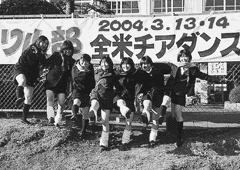

| ダンス・ラブ・グランプリ | |
| 長谷川 晶一 | |
| 主婦の友社 (2004) | |
主婦の友社
ダンス・ラブ★グランプリ
県立厚木高校ダンスドリル部全米制覇の記録
長谷川晶一


目次
プロローグ 一瞬の１３５秒 ――２００４年３月14日 決勝当日
第１章 十五歳、それぞれの春 ――２００２年４月 ダンドリ入部
第２章「これ以上、何を練習したらいいの......」 ――23名、23の苦闘
■ 脚が上がらない、開かない......
■「私は勉強、捨ててました......（涙）」（by尾辻涼子）
■「私は、辞めるべきなのかもしれない......」（by和田早穂）
■「これ以上、何を練習すればいいの？」（by蓑島綾乃）
■「ごめんね、私、ネガティブで......」（by秋丸智子）
■「来年はうれし泣き、流してみせます!!」（by中山奈々恵）
第３章 ダンドリの母、そして、【ＩＭＰＩＳＨ】の女神 ――伊藤早苗と前田千代
第４章「うちら、報われないね......」 ――羽化直前、誕生の苦しみ
■ 新生【ＩＭＰＩＳＨ】の新たなる旅立ち
■「休む勇気」――その代償の大きさ
■「そう、勇気づけられた涙だったんだと思います」（by小島千瀬）
■ そして、勝負の夏が始まった
■「えーっ、この学年、大丈夫なの？」（by前田千代）
■ 暮れなずむ夕闇の中、二人はため息をついた
■「あのさぁ......、夕日がすごくきれいだね」（by小島千瀬）
第５章「踊りたくても、踊れない人もいるのよ！」 ――転機、ＪＡＬ ＣＵＰ優勝
■ ついに、新しい振り付けが完成した！
■ 長岡まゆみの欠場
■「お互いにケンカやめて！」（by山麻里子）
■ 新たなる旅立ち。優勝へのラストスパート
■ 審査委員長・前田千代
■ 田尻光、世界の頂上で喜びを叫ぶ！
第６章 そして、アメリカへ ――全米チアダンス選手権出場決定
■ 降ってわいた、突然のアメリカ行き
■「まだ許可は下りない......」（by伊藤早苗）
■「この苦労は、わかってないかもしれないなぁ（笑）」（by前田千代）
■「優勝狙えるって、ぶっちゃけ思った！」（by田尻光）
■「鳥はどうして飛べるか知ってる？」（by和田早穂）
■「先が思いやられるなぁ......」（by伊藤早苗）
第７章 決戦前夜 ――部長・田尻光の涙
■ フロリダの空はどこまでも高く、そして青かった
■ 蓑島綾乃、突然の吐血
■「ずっと待ってたの。ただひたすら待ってた」（by伊藤早苗）
■「私、このままじゃいけないと思う......」（by田尻光）
■ 迷いはない。明日は〝うちららしく〟楽しもう！
■【ＩＭＰＩＳＨ】、予選一位通過！
■「神様、今まで見てたでしょ！」（by和田早穂）
■ 突然の訃報......
第８章【小悪魔】たちが世界をつかんだ！ ――決勝当日
エピローグ ラスト・ステージ ――ダンスドリルがくれたもの
アメリカ、フロリダ州オーランドで開催された「ＮＤＡ全米チアダンス選手権大会」チーム・パフォーマンス部門総合グランプリを獲得した、厚木高校ダンスドリル部【ＩＭＰＩＳＨ】（インピッシュ）（２００４年３月13，14日／現地時間）
ざわついていた場内に一瞬の静寂が訪れた。
日本からやってきた23名の【小悪魔】たちは、幾重にも織り成すきらびやかな光彩の中、まばゆいばかりのスポットライトを浴びていた。
少女たちは、天に祈りをささげるように胸の前で手を組み、静かに目を閉じて、音楽が鳴るのを待っていた。
二階の観客席には、二年間にわたり23名の面倒を見続けてきた、厚木高校教諭の伊藤早苗がいる。前夜に母を亡くしたばかりの顧問の伊藤は祈る思いでステージを見つめている。
その近くには前田千代がいた。伸び悩む【小悪魔】たちのダンスをわずか半年で劇的に変化させた「女神」だ。前田の生み出す華麗な踊りの数々、その的確な指導が23名の少女たちを、この華やかなステージまで導いたのだと言っても過言ではない。
一階観客席にはタンバリンを手にする笹沼美由紀の母の姿もあった。二年前、内気な性格を変えようとダンスを始めた自分の娘が、今、世界の檜舞台に立とうとしている。アメリカ人の中に交じり固唾をのんで娘を、そして、23名を見守っていた。
「ワン、ツー、スリー、フォー......」
静まり返った場内に、副部長・中山奈々恵のカウントが響き渡る。
「ファイブ、シックス、セブン......」
「ついにここまで来たんだ」
祈りをささげる姿勢のまま、城所小百合は感動のあまり涙が出そうだった。
「あぁ、早く踊りたい」
中山はカウントを数えながら音楽が鳴るのを今か今かと待ち望んでいた。
「いつも以上にみんなの顔がキラキラしているな」
宮唯はこれから始まる踊りがどこまでうまくできるのか期待に震えていた。
そして、ヒザに爆弾を抱える小島千瀬。いまだ癒えぬ腰痛をおしてこの大会に臨んだ長岡まゆみもいる。ようやく23名がこの大会で全員そろった。
23名全員で立つ、初めてのステージがいよいよ始まる。
「エイト、ナイン......、ワン！」
音響係を任されていた二学年上の部長だった福島彩子がスイッチを押した。福島も別のチームで今大会に出場するために渡米していた。
静寂が支配していた会場に、音楽が鳴った。
23名の一糸乱れぬアクションがスタートした。
こうして、少女たちの「１３５秒」が始まった。
まずは、手に持ったポンポンを効果的に使うオープニングパート。最初のモーションで、小菅美樹のヘアピンがはずれた。九本あるうちの一本を髪にぶら下げたまま踊り続ける小菅。
曲が鳴るまでは緊張していた沖野磨梨絵は踊り始めた瞬間、「アメリカ人にうちらのダンスを見せつけてやる」と強気になった。
演技開始早々、観客席からは大歓声が沸き起こった。それまで見ていたアメリカ人による演技とは明らかに何かが違っていた。身長もなく、手脚の長さに劣るアジアの少女たちがこの大観衆を瞬時に魅了した。
アメリカ入りしてすぐ吐血し病院に運ばれた蓑島綾乃もほぼ万全の体調を取り戻すことができた。
緊張で身を固めている者は誰一人いなかった。ある者は歓声を楽しみ、ある者は頭が真っ白になり、ある者は踊りってやっぱり楽しいなとダンスの魅力を再確認していた。
曲が変わり、ポンポンパートからラインダンスパートに移る。
メンバー全員が列になって、肩を組むか腕をつないだ状態で脚を高くキックするラインダンス。
このパートこそ、彼女たちの大きな見せ場のひとつである。大胆ではあるけれど大雑把なアメリカ人のラインダンスと比べ、厚木高校のそれは統制が取れ、足並みもきれいにそろった「調和の美」をアピールできる絶好のパートだった。
全員がすべるように移動してつながったラインの一本目。山麻里子は隣とうまくつながらず脚が90度程度しか上がらなかった。でも、少しも不安はなかった。そんな些細なミスよりもみんなの演技の充実ぶりのほうがはるかに勝っていると思えたからだ。
全員がいい表情をしていた。
23名全員そろってのラインダンスはやはり、観客たちの興奮を誘った。立ち上がり、両手を突き上げて声援を送る観客の姿も目立つ。
「あっ、タンバリンだ！」
秋丸智子は客席から聞こえるタンバリンの音に気がついた。笹沼の母が日本から持参したタンバリンの奏でる音圧が秋丸をはじめ23名の少女たちの背中を後押ししていた。
大喝采を浴びたラインダンスから、ファンクと呼ばれる、いわゆるヒップホップのパートに変わる。客席のボルテージはクライマックスへと到達しつつある。
鈴木うららは日本の観客とアメリカの観客との違いを実感していた。あれがすごい、これはダメだ、と評論家のように「観察」している日本の観客と違い、みんなで盛り上がろう、一緒に楽しもうとするアメリカの観客の声援がとても心地よかった。
彼女たちにとって、どちらかと言えば苦手だったファンクのパートが終わり、ジャズのパートに移る。
「うちがしっかり頑張らないといけない」
ジャズパートのセンターを務める澤弘美は気合いを入れ直した。
実はこの日の朝、ジャズへ移行するときの振り付けを変えていた。前日の予選で、ジャズウォークに難があると審査員から指摘されたことを受けて、ただ歩くのではなく、そこに手のアクションをつけた。それによって、演技にアクセントがつくと同時に、ジャズへの移行もスムーズなものとなった。
大会当日の突然の変更ではあったが、23名はスムーズにそれをこなした。この演技は、このとき音響を担当していた福島たちが二年前に国内の大会で優勝したときの振りだった。イメージはすでに自分たちの頭の中に入っていた。
ジャズのパートに、目に力を入れて観客にアピールする場面がある。
森山瑞希は、この一瞬だけ、時間がゆったりと流れているような錯覚を覚えていた。森山は観客に向かって妖艶な視線、いわゆる「目力」を存分に発揮することができた。
さらに、曲のテンポが上がる。フィニッシュに向けて、テクニックパートが始まった。最後の力を振り絞る23名の【小悪魔】たち。
「頑張れ、頑張れ、おなかに力を入れて頑張れ！」
コーチを務めた前田がいちばん不安だったのがこのパートだった。
ピケと呼ばれるターンからアクセルジャンプに移行する。小島が本番直前の練習で不安を抱えていたパートだった。そして、やはりアクセルの着地に失敗した。
曲調がさらにテンポアップする。トゥタッチを経て、サイドから中央へと走りこんでくるスイッチジャンプ。
残りはあとわずか。銃声に合わせた時間差のトゥタッチもきれいに決まる。ついにクライマックス。
突然の曲の終了に合わせて、各々のフィニッシュポーズ。
――すべてが終わった。
「国が違っても言葉が通じなくても自分たちの伝えたいものがダンスを通じて伝わった」
大野美菜子はそんな気がした。
「心って通じ合えるんだな」
途中で審査員に気づかれないように、ぶら下がっていたヘアピンを投げ捨てた小菅はそう思った。
あまりにも気持ちよく、そしてこの踊りを心から楽しめた川本有里の目からは自然と涙があふれ出てきていた。
大観衆の歓声が23名の周りを包み込み、そしてふわっと上に吹き抜けていく不思議な感覚を味わっていたのは成瀬美悠子だった。
加藤千尋は「その歓声をずっと聞いていたい」と思い、和田早穂は「22名のことが大好きだ」ということを改めて知った。岡望美は「これならどんな結果になっても後悔はしないな」と感じ、山祐未は「もう終わりなの？」と思っていた。アメリカに着いてから、右足首と右の腰に違和感を覚えていた尾辻涼子も無事に踊りきった。
「十七年間でいちばん幸せ！」
二年間部長としてメンバーを引っ張ってきた田尻光は無事に踊り切った幸せをかみしめていた。
大観衆は惜しみなく拍手を繰り返しながら、スタンディングオベーションを始めた。舞台上の23名は言葉にならない言葉を発し、あふれる涙を拭おうともせず、お互いに抱き合っている。完全燃焼を成し遂げたものだけが獲得しうる清爽な気がステージ上に充満していた。観客席の伊藤はビデオを撮っていることも忘れ、こぶしを突き上げていた。前田も泣いていた。会場がひとつになった瞬間。フロリダ州オーランドで日本の少女たちが演じた「小さな奇跡」に誰もが酔いしれていた。
時間にしてわずか二分十五秒。
ダンス未経験者の少女たちが費やした二年という時間。多くのものを犠牲にし、しかし、それを上回るさらに大きなものを手にするのに要した日々。
それがこの二分十五秒であり、１３５秒に集約されていた。
神奈川県立厚木高校という伝統ある進学校のチアダンス未経験者の少女たち。その素質もレベルも異なる23もの個性が織り成すハーモニー。補欠選手を作らず、全員参加主義のこのチームが全米を制覇するその裏側には何があったのか？ 人は短期間でここまで変われるものなのか？
この物語は、【ＩＭＰＩＳＨ】と呼ばれる23名の【小悪魔】たちが、チアダンスの本場アメリカで「ラージ・バーシティ」第一位、そして「チーム・パフォーマンス」部門グランプリを獲得するまでの記録である。伝統ある進学校、神奈川県立厚木高校ダンスドリル部。普通の公立高校の普通の女子高生たちが経験した、努力や苦闘、挫折を通じて、その原動力となった信頼と友情、そして、その強さの秘密を描くものである。
神奈川県立厚木高校の正門前
■春、桜咲き乱れる「尼の泣き坂」
神奈川県厚木市。
二〇〇五年に市制五十周年を迎える、人口二十二万人のベッドタウン。ＪＲと小田急線とが連日連夜、多くの人々を都心へと送り出し、また、迎え入れてもいる。駅ビルやデパートが林立する、そのにぎやかな本厚木駅から歩いておよそ二十分。広大なグリーンが目にまぶしい厚木中央公園を過ぎ、なだらかな坂を上ったところにある戸室の丘。かつてその地に存在していた尼寺、その面影をその名に残す「尼の泣き坂」が、そこにある。
坂の両側の桜並木が爛漫と咲き誇る中、大いなる希望と期待とを胸に、坂の頂上にある校門を目指す厚木高校の新入生たちがいた。それは毎年変わらぬ、この近辺の春の風物詩のひとつであった。
しかし、この年。かつて尼が涙を流したというこの坂を上る新入生たちの中に、後に全米にその名を轟かす23名の少女たちの姿があった。
二〇〇二年四月のことである。
神奈川県立厚木高校。
県央一の偏差値を誇り、有名大学への進学率も高い名門校。旧制中学の流れを汲み、その創立は百有余年前にさかのぼる。剛健、真剣、勤倹の「三剣」があしらわれた校章を持つ、全国屈指の名門校は、他の多くの伝統校がそうであるように、文武両道をその理想に掲げている。しかし、多くの私立校が全国を網羅する「スカウト活動」を繰り広げている現在、公立高校がスポーツの世界において、私立高校と伍することの難しさは説明するまでもない。厚木高校においても状況は同様で、単に「勝敗」や「記録」という面だけを見れば、近年、特筆すべき成果を収めているわけではない。
しかし、伊藤早苗教諭が顧問を務める、ダンスドリル部（通称・ダンドリ）はこれまでに主要大会で優勝を成し遂げ、入賞経験を何度も持つ。この二〇〇二年の三月には、国内のチアダンス大会の晴れ舞台ともいえる、第六回「ＵＳＡ－Ｎａｔｉｏｎａｌｓ ｉｎ Ｊａｐａｎ」において「ソングリーディング／ポンダンス部門」で当時の二年生たちが見事、優勝している。新入生が入学してくる、わずか一カ月前のことだ。
■「私もあんなふうに輝きたい♪」（by岡望美）
入学早々に開催される恒例の新入生歓迎会。ここで新入生たちは、これからの高校生活を大きく占める部活動選択の手がかりを得る。多くの部が、それぞれの日ごろの成果を披露すべく、一年生たちに向かってデモンストレーションを繰り広げる。
この年、ダンスドリル部は、わずか一カ月ほど前にグランプリを獲得したばかりの新三年生たちが演技を披露した。
後に部長になる田尻光や、山祐未、森山瑞希は受験生であった前年秋、厚木高校の文化祭「戸陵祭」でダンスドリル部の勇姿を見て、入部の決意を固めていた。
「中学のときにソフトボール部だったんで、もし厚高（厚木高校）にソフト部があれば迷ったかもしれないけど、なかったから全然迷いませんでした」
と田尻は入学当時を振り返る。
また、新入生の前で華やかに踊る三年生の中には、小島千瀬、そして、城所小百合の姉の姿があった。
「お姉ちゃんの演技を間近で見て、単純にすごいなぁと思いました。元々、お姉ちゃんがすごく楽しいよ、って言っていたんで高校に合格したら絶対に入部しようと思っていたんだけど、新歓の演技は本当に感動しました」
姉の影響で中学生のころから、ダンスドリル部に憧れを抱いていた小島は言う。そして、城所の場合は、小島とは少し事情が異なる。
「姉の踊っているビデオは前から見ていたけど、私は、全然、入部するつもりはありませんでした。それまでに、優勝した話をお姉ちゃんから聞いていて、すごいなぁとは思っていたけど、私にはできないと思っていました。でも、新歓で本物を見たら、本当にすごくて......。まさか、自分がやるなんて思ってもみなかった。だから、入部を決めたって言ったら、お姉ちゃんもびっくりしていました」
そして、それ以外のほとんどの者は、新歓での三年生のその華々しい姿に魅了された。
どの部活にも入らず高校生活を「帰宅部」として過ごすつもりだった小菅美樹は考えをすぐに改めた。仲間を肩車したり、ジャンプしたメンバーをキャッチしたりする、マウントと呼ばれる演技を見て、「私も上に乗りたい」と思った。入学前からダンスドリルに関心を持っていた沖野磨梨絵は「この部活しかないな」とその思いを強くした。
宮唯は「できないかもしれないっていう不安より、感動のほうが大きくて、勢いで入部を決めた」と笑い、大野美菜子は「とっても華やかで自分の柄には合わないって思っていたけど、やりたい、っていう思いのほうが断然強くなった」と話す。
元々、宝塚などのミュージカルが好きだった和田早穂は「衣装も演技もよくて、みんな本当に楽しそうでキラキラしていて、私もああなりたい」と強く思い、中学時代に生徒会活動にエネルギーを注いできた岡望美は「先輩たちの獲得したトロフィーを見て私も輝きたい」と思った。
■ただ一人の五月入部
しかし、何人かの例外もあった。
後に、仲間たちから〝ダンスの鬼〟と称される澤弘美。四歳からクラシックバレエを習っていた澤は新歓での演技を他のメンバーとは違う形で受け止めていた。
「ラインがそろっていて、確かにすごいな、とは思ったんですけど、自分でも実際にバレエをやっていたので、回転系の動きについては、そんなにすごいとは思わなかった」
中学時代にはバレエの妨げにならないようにと、負担の軽い美術部に入部していた。高校に入学しても、クラシックバレエを優先するつもりでいた。高校で美術部に入るつもりはまったくなかった。むしろ、どこにも入部せずに、クラシックバレエに専念しようか、とも考えていた。しかし、「そのときは両立できそうな気がして」、迷ったあげく、高校でも身体を動かすダンスドリル部に入部してみることにした。
「バレエっていうのは自分自身でどんどんうまくなっていくっていう感じなんですけど、チアダンスの場合は、みんながそろっていないといけないから、みんなでどんどんうまくなっていくっていうところにすごく惹かれて。みんなで作り上げていく喜びとか、みんなで賞を取る喜びとか、すごく楽しそうな気がしたんです」
それまで個人競技であるクラシックバレエの世界に生きてきた澤にとってダンスドリルという団体競技、チアダンスは新鮮に映った。最終的にダンドリに専念することを決める澤は「みんな」という言葉を何度も繰り返した。
厚木高校では、新入生の部活動への入部手続きを二回に分けて行っている。例年、最初の入部手続きが四月の中旬にあり、二回目を四月の下旬に設定して、その間、さまざまな部活動を体験しながら最終判断を下せるような仕組みになっている。
山麻里子は二回目の入部手続きで入部を決めた。
「最初は、バスケ、体操、バドミントン、どれにしようか迷っていて、ダンドリなんか、少しも考えてもみませんでした」
仲間たちから「麻里男」と呼ばれるほど、快活な山（麻）は、みんなが感動した新歓の演技についても元気にこう答える。
「すごかったんですけども、私にはぜってぇー、入れねぇ～、みたいな」
でも、同じ中学だった秋丸智子につき合い、先輩たちの楽しそうな練習風景を見て、少しだけダンスドリル部の練習に参加しているうちに考えが改まり、山（麻）は二度目の手続きで入部を決めた。
中学のころ、関東大会に出場するほど本格的に剣道に打ち込んでいた加藤千尋は高校でも剣道を続けるつもりでいた。
「入学したときから、剣道を続けるつもりだったんですよ。だから、新歓のダンスドリル部の先輩たちの演技もそんなにちゃんと見てなかったし......。高校でも中学のときみたいにキツい部活に入りたくて。でも、顧問の先生に聞くと、厚木高校の剣道部は、そこまで練習はやってないみたいで、あんまり強くないみたい。やっぱ、部活は毎日、たくさん練習があったほうが楽しいから、キツい部活っていうことでダンスドリル部に入ったのかなぁ？ なんでだろ？」
自分のことでありながら、どこか他人事のような話し振りで加藤は言う。
「そうなんですよ、いまだになんで入部したのかわからないんです、ハハハハハ」
加藤が入部して最初にとまどったのは、剣道の「男臭い世界」から、「女の世界」に入ることだった。
「女だけの世界ですからねぇ。（田尻）光とか、（小島）千瀬とか、しっかり髪の毛を染めてて。『あっ、ギャルだ！』って思ったり。性格の悪い子がいたらどうしようかなぁ、とかいろいろ考えましたね」
とは言っても、その後、加藤は入部以来、一度も退部を考えたことがないほど、ダンドリにのめり込むことになる。
蓑島綾乃は第一回目の手続きで、弓道部への入部を決めていた。
「中学のときにバドミントン部に入っていたんですけど、そこがとっても忙しい部だったんです。だから、高校では少しのんびりできる部に入りたいと思っていました。ダンドリも魅力的だったんだけど、とても忙しくて大変な部だということは知っていたんで、入部しませんでした。それで、弓道部に入ることにしました」
蓑島は弓道の経験はゼロ。しかし、そこに不安材料はなかった。
「心配はまったくなかったです。兄が弓道部だったんで、だいたいどんなことをやるのかはわかっていたんで。ただ......」
少し、言いよどんだ後に、言葉を続けた。
「弓道部の練習場所って、ダンドリの活動場所とすごく近いんです。そこで、他の一年生たちが柔軟体操をしているのを見ているうちに、だんだんとうらやましくなってきてしまったんです」
気がつくとダンスドリル部に目がいってしまう自分にすぐに気がついた。そして、蓑島は弓道部を退部することにした。それは、五月に入ってからのことだった。一カ月遅れということであせりは隠せなかった。
「ちょっとでも劣っているところがあると、あぁ、最初にいなかったからなって。弓道部にいたことを後悔したりすることもありました」
しかし、他のメンバーとの遅れを取り戻すにはまだまだ時間はたっぷりとあった。
■「自分の性格を変えてみたくて......」（by笹沼美由紀）
笹沼美由紀のケースはさらにデリケートなものだった。
「私は、第一回の手続きのときに、中学のときからやっていたブラスバンド部に入ることに決めました。ダンドリに入りたい気持ちはあったんだけど、やっぱり、自分はキャラが違うなっていうか......。昔から、あんまり表に出るのができなくて、あんまりしゃべらない感じだったし、みんなの前で短いスカートをはいて踊るなんて、自分にできるのかなって......」
そんな迷いを抱えてはいたが、笹沼は第二回目の入部手続きでは、その魅力に抗いきれずに、ダンスドリル部へ仮入部を果たす。それでもなお、気持ちは揺れ動いていた。
「中庭で柔軟体操なんかしているとブラバンの音が聞こえてくるんです。そうすると、本当にこれでよかったのかな、やっぱりブラバンのほうが私に向いているんじゃないかなって、迷いが出てくるんです」
そして、その迷いを抱いたまま五月に入り、笹沼は決心をした。
「ダンドリを辞めて、やっぱり、ブラバンに戻ろう」
部長である二年生の先輩に事情を話し、了承を得た。あとは、次の練習日にみんなの前で挨拶をすれば、正式にダンスドリル部からの退部が決定する。
しかし。
みんなの前で事情を説明するまでに、たまたま、丸一日の練習休養日があった。もう一度、考え直す時間が笹沼の前にもたらされた。
「中学のときに三年間サックスをやっていて、もっとちゃんとサックスをやりたいなって思いが強かったんですけど、まったく未経験のダンドリにも惹かれるものがあって、一日中、ずっと考えに考えていたんです」
自分が今までやってきた道をさらに追求するか、それともまったく未知の世界に飛び込むか。
15歳の少女は決断を迫られていた。
「私、小学校のころは人前であんまりしゃべれなかったんです。でも、中学に入ってちょっとずつ表に出られるようになって、結構しゃべれるようになって......。だから、高校に入っても、もっといろいろなことにチャレンジしたいなって思いが強くなったんです。中学の体育祭でちょっとだけ、本当に簡単な踊りを、ちょっとだけ踊ったんです。それが本当に楽しくて、踊ることが好きになったんだけど、でも、やったことがないからどうすればいいかわからなかった。だったら、高校でチャレンジしてみたらいいんじゃないかって。そんなことを練習の定休日の間に考えたんです」
翌日、笹沼はダンスドリル部での活動を続ける旨を部長に告げた。
内向的な自分を変えるきっかけにしたい。
人見知りの激しい自分を変えたい。
自分の意見を、しっかりと口に出せるようにしたい。
彼女が自分の変化を感じるようになるのは、もう少し先のことであるが、こうして、笹沼はダンスドリル部にとどまることになった。
この時期のことを笹沼の母は振り返る。
「ダンドリにとどまることを決めた後も、数日間は家で、やっぱり吹奏楽部に戻りたいって泣きながら言っていたこともありました......。私としてもただただ見守るだけでした。でも、すぐに踊る楽しさがわかったんでしょうね。やっぱりダンドリに入ってよかったって言っていましたから」
笹沼は言う。
「たまたま、一日あいていたから、いろいろ考えられたけど、もし休みがなかったらブラバンに行っていたと思います」
もしも、練習休養日がなかったら。
もしも、ブラスバンド部に行っていたら。
笹沼はどんな高校生活を過ごしていたのだろうか？
「もし、ブラバンをやっていたら？ そんなことを考えたことは一度もありません」
笹沼ははにかみながらも力強く答えた。
こうして、二〇〇二年の春。
後に全米を征することになる23名の少女たちは、それぞれの期待と不安を胸に、ダンスドリル部への入部を決めた。クラシックバレエやヒップホップの経験者は数名いたものの、ダンスドリルに関しては、いずれもまったくの初心者ばかりの集団だった。
それは、くしくも、厚木高校、創立百周年の春のことだった。
練習の後で
一年生時の文化祭でのダンス
■脚が上がらない、開かない......
ダンスドリル（Ｄａｎｃｅ Ｄｒｉｌｌ）。
辞書を引くと『Ｄｒｉｌｌ』には、「訓練する〔を受ける〕」とある。訓練されたダンスを観客に披露するこのダンスドリル。ここには「バトン・トワリング」や兵隊の行進、マス・ゲームなどに見られる「ミリタリー」、そして「チアリーディング」などが含まれる。
この「チアリーディング」の中でもダンス要素に特化したものをソングリーディング・ポンダンス・ドリル、または、チアダンスと言う。少しばかりダンスに関心のある人でも、ダンスドリルとチアリーディングの違いを説明できる者はあまりいないかもしれない。
両者の違いを簡単に言えば、チアリーディングとは、人を投げたり飛ばしたり、アクロバティックなパフォーマンスを競う競技で、ダンスドリルはそうしたアクロバティックな動作が禁止されたパフォーマンスの総称である。ダンスの振り付けやその表現力、また、キックやターンなどの各自のテクニックはもちろんのこと、チームとしての独自性、協調性など、個人のみならず、チームの総合力が問われる競技である。
この年の厚木高校ダンスドリル部には総勢三十二名の一年生が入部した。
入部までに、それぞれのドラマがあったように、入部後の部活動への取り組み方もまた、さまざまだった。
入部してすぐに、誰もが悩まされることがある。
アクロバティックな動きは禁止されているとはいえ、激しいダンスを行う上で、また、ケガを予防する上でも、柔軟性は必要不可欠なものとなる。しかし、中学時代に運動部を経験していた者たちでさえ、両脚を完全に開脚できるほどの股関節を持ち合わせている者はいなかった。ましてや、美術部やブラバン、生徒会活動にいそしんできた者にとっては、まったく初めて経験する大きなカベであった。わずかに、幼いころからクラシックバレエを経験してきた数名だけが、柔軟性という一点においては、わずかばかりの優位性を保っていた。
大野美菜子は言う。
「ダンスの技術的なものは一年生だから、まだできなくても仕方がないかもしれないけど、体がとにかく硬かったんで、柔らかくなるよう、お風呂上がりのストレッチは必ずやっていました」
誰もが、ストレッチはもちろん、自宅での日課として、腹筋や背筋運動をこなしていた。山麻里子は、自宅での食事のときも、両脚を大きく広げたまま、床に座って食べていたという。
しかし、地道な反復練習はやがて必ず実を結ぶ。早い者は夏ぐらいから、遅くとも秋口には、それぞれが、それなりの柔軟性を獲得するようになっていく。
■「私は勉強、捨ててました......（涙）」（by尾辻涼子）
勉強との両立も彼女たちを悩ませた大きな問題だった。元来、進学校であり、中学のときから高い偏差値を誇ってきた彼女たちにとって、勉強がよくわからない、あるいは、授業についていけないという経験は初めて味わう苦いものだった。中間テスト、期末テストなどでその結果が如実に表れると、ますますあせりが募った。
「通学のバスの中で一生懸命、単語を覚えたり、目標を持つと頑張れる気がしたんで、家では、今日はこの科目だけって決めていました。あと、疲れているときは潔く寝ました」
と鈴木うららは話す。ダンドリと勉強との両立について聞くと、そのほとんどが、伏し目がちに「両立はできていませんでした」と開き直りつつも、消え入りそうな声で話す。
尾辻涼子はさらに潔かった。
「私は勉強、捨ててました......」
尾辻の母は言う。
「家に帰ってきて、お風呂にも入らずリビングで寝ている姿を見ていると、そのまま寝かせておいてあげたいという気持ちと、起こして勉強をさせたい気持ちと......。親の中にも葛藤はありましたね」
こうした勉強の問題に付随する形で、親との確執も大きな問題として生まれてきていた。
「勉強は一体、どうしたの？ 両立できないのならダンドリなんか辞めてしまいなさい！」
高校一年の秋、文化祭「戸陵祭」の直前。
宮唯は母と大ゲンカをしていた。確かに、母の言う通りだと頭ではわかっていた。いちばんもどかしさを感じているのは、何より自分自身に他ならないのだから。
「本当にそのころは、家、帰って寝るだけの毎日でしたからね......。文化祭直前のころは毎晩ケンカばかりでした。私、泣きわめいてましたもん、絶対にやめないっっっ！って」
「学業のことももちろんあったんですけれども、ケガや疲れなど体調のことが心配だったんです」と宮の母は言う。
その母が、初めて娘のダンスを見たのが、このときの「戸陵祭」での演技だった。演技を見たその晩、母は宮に優しく話しかけた。
「こんなにすごいとは思わなかったわよ」
「戸陵祭」を境に、母はとても協力的になった。
「それからは、辞めろとは一度も言われませんでした。それどころか、毎日、毎日、朝練のために、私を起こしてくれて、お弁当もちゃんと作ってくれて。この人がいなきゃ絶対に、頑張り続けることができなかったと思う......」
午前七時三〇分から始まる朝練のために、母は惜しみない愛情を娘に注いだ。
「それでも心配がなくなることはありませんでしたけれどね......」と母は静かに微笑んだ。
■「私は、辞めるべきなのかもしれない......」（by和田早穂）
コ・ツ・マ・ク・エ・ン。
23人の少女たちの口からたびたび出てきたフレーズである。正式には脛骨過労性骨膜炎（シンスプリント）といい、ランニングや、ジャンプ、ダッシュを繰り返す運動選手に特有のスポーツ障害である。そのほとんどが、下腿（ヒザより下）の内側に位置する脛骨の中央から下部、ちょうど脛のあたりに、うずくような鈍痛を伴う。競走馬にもよく見られる症状で、予防策としては、下腿の筋力を増加したり、衝撃吸収性の高いシューズを履くことなどがあるが、ダンスドリルを行っている限りは、これはもう避けられない障害であると言っていい。
いちばんの治療法は、一カ月程度の安静であるが、少しでも休んだら他のメンバーに遅れてしまうのでは、と疑心暗鬼になっている少女たちにとって、それはとても難しい相談だった。
骨膜炎以外にも、23名のメンバーはさまざまなケガに悩まされていた。
小学校五年生のころから、本格的にヒップホップの教室に通っていて、仲間から「人とは違うオーラを持っている」と言われる中山奈々恵は、一度だけ首に原因不明のアクシデントを抱えたことがある。
「骨膜炎で練習を休んでいるときに、脚を使わないでできる筋トレをしようと思って、腹筋をしているときに傷めたみたいで。それから、一週間、首をまったく動かせなくなっちゃいました。授業を受けることもできなくて、保健室で休んだりするほどだったんです。自分がまったく踊れないときに、みんなが楽しそうに踊っているのを見ていると、本気で生きているのがイヤになってくるんです」
今では、少し、冗談めかして話すものの、中山の、その表情は真剣そのものだった。
和田早穂は、ダンスドリル部を辞めようと思ったことは一度もない、と言い切る。しかし、これは二年生になってからのことであるが、たった一度だけ、真剣に自らの処遇を考えたことがある。
「辞めようと思ったことはないんですけど、辞めるべきなのかも、と思ったことはあります。右足首を捻挫したことがあったんです。捻挫って、そんなに重大なものでもないように思えるじゃないですか。でも、全然治らなくて、練習はもちろん、腕立て伏せもできないし、ストレッチもできるものが限られてくるし。捻挫って、ケガとしては軽く見られがちだから、周りの子にも、捻挫でこんなに休むのかよ、って思われてるんじゃないか。みんなで楽しもうと誓ったのに、私が足を引っ張っているんじゃないのか、そんなことをずっと考えたりして......」
帰宅して、風呂に入り、コブシ大に腫れ上がった足首を見るたびに思った。
「これ以上、みんなの足を引っ張るようならば、私は、辞めるべきなのかもしれない」と。
幸いにして、しばらくして腫れはひいたが、そのとき足をかばっていた影響なのか、和田はその後、慢性的な腰痛に悩まされることになる。
■「これ以上、何を練習すればいいの？」（by蓑島綾乃）
同じく、慢性的な腰痛に悩まされ続けたのが、長岡まゆみだった。
二〇〇二年の暮れのこと。
翌年三月に控えた、第七回「ＵＳＡ－Ｎａｔｉｏｎａｌｓ ｉｎ Ｊａｐａｎ」の「ソングリーディング／ポンポン部門」に出場するために、上級生によるオーディションがダンスドリル部内で行われた。これは一年生にとっては、初めての実力診断のようなものであった。この時点では、三十二名いた部員も二十五名となっていた。
このころから、長岡の腰には、少しずつ、少しずつ微妙な違和感が宿り始めていた。
「年が明けた一月ぐらいに、決定的におかしいなという感じになりました。体育もできないし、走るのも重いものを持つこともできなくなって......。授業中にずっと座っていることさえキツい状態でした」
練習の合間に病院に通い、メンバーの励ましを受けて、なんとかやり過ごそうとしたものの、ジャンプ技を集中的にこなした夜は痛みで眠れなかったと長岡は言う。
長岡のケガをめぐって、この後、厚木高校ダンスドリル部に大きな事件が起こるのだが、それはまた後に述べることにしたい。
十二月に開催されたこのオーディションでは、一年生二十五名を、【Ｉｍｐｉｓｈ Ｓｈｉｎｅｒｓ】と【Ｉｍｐｉｓｈ Ｂｌａｚｅ】という二つのチームに分けた。
それまで、多少のレベルの差はあっても、同じ境遇で努力してきたメンバー間に厳然とした現実が突きつけられる。すなわち、実力的に上位のＡチームである【Ｓｈｉｎｅｒｓ】と実力下位のＢチーム、【Ｂｌａｚｅ】という具合に。
ここで行われるレベルテストでは、審査員でもある上級生たちが一年生それぞれについて、各自講評を加えることになっていた。蓑島綾乃の欄には、こう書かれていた。
「練習が足りないのでは？」
体質的に太れず、線の細い蓑島。顧問の伊藤早苗教諭をはじめ、周囲の多くが、入部当初には「途中で辞めるのでは」と考えていた。弓道部を辞め、いちばん最後にダンスドリル部に入部した蓑島は、人一倍練習を繰り返してきた自負があった。しかし、この先輩のコメントにはショックを隠しきれなかった。
もちろん、先輩には悪意などない。技術の進歩のためには、厳しく率直な意見を告げる必要がある。忌憚なく意見を述べる。それが、厚木高校ダンスドリル部のいい伝統でもある。ただ、かつて胃下垂だったこともある蓑島にとって、このひと言はかなりこたえた。
ハードな練習を終えて家に帰る。人より遅れている自覚があるからこそ、腹筋をやる。背筋をやる。柔軟をやる。胃腸が弱く元より健康ではなかった。だから、漢方薬を飲んだ。栄養剤も飲んだ。毎朝のリンゴ酢は欠かさず、二週に一回は整体にも通っていた。仲間からは「健康おたく」とからかわれるほどだった。
「これ以上、何を練習すればいいの？」
蓑島の頭は真っ白になっていた。
「ただ落ち込んでいるだけでした。だから、これからどうしようって考えるほどの余裕もありませんでしたから......」
顧問の伊藤は蓑島の母親からの電話を鮮明に覚えている。
「そんなときに、彼女のお母さんから電話がありました。家でもビッチリ練習を繰り返している話をいろいろ聞きました。正直、私はそこまで彼女がやっていたとは思いませんでした。そして、お母さんが言うには、本人はやっぱりダンスが好きで辞めたくはないと。でも、一体、これ以上、何をすればいいんですか？ そんな内容でした」
当時、伊藤はこう答えることしかできなかった。
「好きであるならばなおさら、無理はしないで自分のペースで練習を続けてください」と。
ちなみに、このときのメンバー構成は次の通りである。
【Ｉｍｐｉｓｈ Ｓｈｉｎｅｒｓ】
田尻光、中山奈々恵、和田早穂、山祐未、尾辻涼子、川本有里、森山瑞希、沖野磨梨絵、小島千瀬、成瀬美悠子、澤弘美、岡望美、加藤千尋
【Ｉｍｐｉｓｈ Ｂｌａｚｅ】
鈴木うらら、城所小百合、蓑島綾乃、山麻里子、長岡まゆみ、笹沼美由紀、大野美菜子、小菅美樹、秋丸智子、宮唯、他二名（二年進級時に退部）
前年、二年生が見事優勝したこの年の大会では、【Ｉｍｐｉｓｈ Ｓｈｉｎｅｒｓ】が十位という成績を収めたものの、【Ｉｍｐｉｓｈ Ｂｌａｚｅ】は予選敗退。
そして、この大会を最後に引退する二年生たちの【ＩＭＰＩＳＨ】は三位に終わっている。
【Ｉｍｐｉｓｈ Ｂｌａｚｅ】に所属していた長岡は、部員全員が記したこの大会終了後の感想文の中で、こう書き残している。
「３ヶ月前、チーム分けをして、私はＢチームの方に名前を呼ばれた。その日の夜はたくさん泣いた。でも、３月15日の夜の方がたくさん泣いた。今はあのチームで本当に良かったと思っていて（だきょうとかそういう意味じゃなくて）舞台で踊っていた自分達をほこりに思う。（中略）くやしい思いをした自分のあの時の気持ちは絶対に忘れないでいたいと思う。大会が終わって今考えてみると、ずっとずっと昔より強くなった気がする」（原文ママ）
後々まで苦しむことになる腰痛が原因で、思うように体が動かなかった長岡の悔しさ、そして、それを乗り越えていこうとする強い意志が、そこには素直に表現されていた。
■「ごめんね、私、ネガティブで......」（by秋丸智子）
このころ、【Ｉｍｐｉｓｈ Ｂｌａｚｅ】のメンバー内で一騒動があった。
チーム長である、山（麻）と副チーム長の秋丸が衝突した。
大会前、先輩に彼女たちはこう言われた。
「【ＩＭＰＩＳＨ】の名を語るには誇りがなさすぎる。このままじゃ、できることなら、大会にも出てほしくない」と。
チーム長であった、山（麻）は責任を感じていた。でも、だからといってリーダーである自分が落ち込んでいてもしょうがない。
「私は、結構、前向きなところがあって、次に行くために頑張んなきゃ、みたいな開き直りが早いタイプなんです。だから、このときも、先輩たちにいい活を入れてもらったな、と思って、あとはうちらで頑張ろう。よし、円陣組むべー、みたいな話をしたんです。そうしたら......」
「そう言うけどさぁ、なんで、そんなふうに明るく言えるの？ 円陣組む、とかよく言えるよね。悔しくないの？」
秋丸が口を開いた。その場の空気が一瞬にして凍りついた。
そのときのことを、秋丸は振り返る。
「私はすごくダメダメだったから......。何に対してもネガティブに捉えがちっていうか。そのときは、すごい頑張ってるのに、どうしてダメなんだろう、って気持ちでいっぱいで、マリちゃんの言葉に素直になれなかった」
山（麻）だって、当然悔しかった。
「ぶっちゃけ、私がしっかり練習方法を考えられなかったから、まとまりがなかったのかもしれない......」と自分を責めていた。
「ちょっとの間は耐えていたんです。でも、せっかくのいい振りなのにうちらの演技力がない情けなさや、もうこのチームで踊ることはないんだなっていう寂しさがこみ上げてきて、そのときはこらえきれずに涙が出てきちゃいました」
そのときのことを思い出したとき、快活な「麻里男」の表情が少しだけ曇った。
「マリちゃんが辛いのはみんなわかってると思うから、みんな今日一日、家で考えてこようよ。とりあえず、今日は解散しようよ」
その場は、長岡がとりなして、一応の収拾をつけた。
しかし、その日の帰り。部室で秋丸は山（麻）に謝った。
「ごめんね、私、ネガティブで......」
「うん、私こそ、ごめんね」
この一件に限らず、ダンスドリル部内で、こうした衝突が起こるたび、この23名は決して、遺恨やモヤモヤを翌日に持ち込むことはしない。必ず、その日のトラブルはその日のうちに解決してきている。
「その日に、そのまま普通に一緒に帰ったことが、トモコとのいちばんの思い出かな」
山（麻）は明るい笑顔に戻って、そう話した。
■「来年はうれし泣き、流してみせます!!」（by中山奈々恵）
全員が書いた、先の感想文の中で、中山はこう書いている。
「私は大会で先輩の涙を見たとき、『絶対に来年は私達が優勝する。』と決意しました。自分のためにも先パイのためにも...。来年はうれし泣き、流してみせます!!」（原文ママ）
優勝を逃した二年生の悔しさを目の当たりにした一年生たちは、このときの「先輩の涙」を深く胸に刻んだ。山（麻）も、普段下級生の前では、あまり感情を表に出さない部長の泣いている姿を見て驚きを覚えていた。
「そのときのことははっきりと覚えています」と当時の二年生で部長だった高橋祐有は言う。高橋は現在大学に通いながら、国内でも有数のクラブチームである【Ｄａｎｃｅ ｆｏｒ ｔｈｅ ＰＬＡＮＥＴ】のメンバーとしてダンスを続けている。
「彼女たちが、泣きながら声をからして応援してくれていました。前の代が優勝して、私たちが三位になって、それで悔し泣きをしていると、『来年は先輩たちの分まで絶対に頑張ります！』ってみんなが口々に言ってくれました」
このときコーチである長沼由夏もまた悔しさをかみしめていた。
「その上の代のプレッシャーがすごくありながらも技術的にはすごくよくできたと思ったんですが......。私もすごい悔しい思いをしたので、次は絶対！と思いましたね」
この年からコーチを務めた長沼もまた、このとき、翌年の雪辱を胸に誓うこととなる。
二〇〇三年四月、「尼の泣き坂」に桜が咲き誇る中、23名は二年生になった。
それに伴い、【Ｉｍｐｉｓｈ Ｓｈｉｎｅｒｓ】と【Ｉｍｐｉｓｈ Ｂｌａｚｅ】とに分かれていた23名は、先輩たちが築き上げてきた、栄光の【ＩＭＰＩＳＨ】を襲名することになった。全員による選挙で部長には田尻光、副部長には中山奈々恵と和田早穂の二人が選ばれた。
いよいよ、23名の【小悪魔】たちが、栄光に向けての胎動を始めた。
このとき、尾辻は翌年三月の最後の国内大会である第八回「ＵＳＡ－Ｎａｔｉｏｎａｌｓ ｉｎ Ｊａｐａｎ」を見据え、こう書いている。
「目標は、ＵＳＡで優勝。（したいな...／汗）」
伊藤早苗先生と宮唯さん
前田千代コーチと和田早穂さん
■「技術面の指導は何もできません（笑）」（by伊藤早苗）
平成六年四月一日。
伊藤早苗は、保健体育の教諭として厚木高校に赴任した。そして、赴任とともに、ダンスドリル部の顧問になった。
しかし、伊藤にはダンスの経験はない。
「結局、どこの学校もそうなんですけれども、だいたい、体育の場合は特に、その先生がいなくなった場合、その人が受け持っていた部を後任者が引き継ぐことが多いんです。だから、私は最初からずっとダンスドリル部です。前の学校では新体操部でした。これも未経験。だって、私は元々は陸上専門なんですからね」
前任者は自らジャズダンスを習っていて、自分で指導することも可能だったが、伊藤の場合はそれもかなわなかった。そこで、伊藤が採ったのは、部長経験のある卒業生に嘱託コーチという形で指導を依頼するという方法だった。初代のコーチが若林礼子といい、伊藤と入れ替わるようにその年卒業したばかりのＯＧだった。その後、関根美代子が二代目となり、現在の長沼由夏は三代目となる。
「ダンスのテクニックとか、技術面の指導は何もできないので、全部、コーチにおまかせ」
では、厚木高校ダンスドリル部における、伊藤の役割とは何なのか？
「技術面以外のあらゆること全部。単純に言えば、お母さんみたいなものです。生徒たちが余計な気を使わないで、練習に専念できるようにすることです。たとえば、大会への参加手続きだとか、当日の練習場所の確保だとか、お金の管理だとか、とにかく雑用全般です。うちの部にはマネージャーがいませんから」
23名全員に、伊藤についての印象をアンケートに書いてもらった。その一部を挙げてみる（すべて原文ママ）。
「私達の母的な人です。時には優しく、時には口うるさく...」（田尻光）
「昔の厳しい人って感じで、私たちのお母さんみたいです」（中山奈々恵）
「いつも元気で、ダンドリのお母さん的存在。すごくお世話になりました」（山祐未）
「細かいところまで考えてくれる」（鈴木うらら）
「私たちのことを本気で娘だと思ってくれてて、いつも本気で心配してくれる」（尾辻涼子）
「集合時間とかはきびしいが、かげですごいいろいろやってくれていつも走り回っている人」（城所小百合）
「常識をとてもよく知っている。ダンドリの母」（森山瑞希）
「しょっちゅうしかられてしまいますが、うちらのこと一番思ってくれてて、ダンドリのマザー」（山麻里子）
「時間と服装に厳しい（？）人」（小島千瀬）
「生徒想いの実は涙もろい先生」（大野美菜子）
「体育の時間には生徒にキビしいのに、ダンドリに来るといっつもニコニコ笑っている、部員を娘のように愛して、心配してくれる先生」（宮唯）
「しつけに厳しい」「おしゃべり好きで話し出すと止まらない」という答えもいくつか見られたが、最も多かったのが、ほとんどのメンバーが挙げていた「お母さんみたいな存在」というものだった。まさに自他ともに認める「ダンドリの母」である。
そんな「ダンドリの母」から見た、23人それぞれの印象について、話を聞こうとすると伊藤は、やんわりとその申し出を断った。
「このダンスドリル部は、代々ヒロインはいないんです。この23人にしたってそう。私にとっては、みんな同じなんです。だから、特に印象に残る子だとか、それぞれのエピソードを、と言われてもあんまりわからないんですよ」
わからないはずはない。
技術面の指導はしていないと伊藤は言うが、そうは言っても、日々の練習には顔を出している。生徒たちの体調面の管理や、先の蓑島綾乃の例のように、母親とのやり取りなど、常にダンスドリル部の活動に粉骨砕身しているのだ。だが、伊藤はここで一人一人について、何かを語ることをよしとしなかったのであろう。
こんなところにもダンスドリル部躍進の一因が隠れているように思えてならない。
「決して誰かをスター扱いしない」という、厚木高校ダンスドリル部ならではのルールが、伊藤の発言から見えはしないか？ 伊藤はしばしば口にする。
「【ＩＭＰＩＳＨ】にはヒロインはいないんです」と。
■大会には全員出場させる！
一九四六年、新潟県燕市に生まれた伊藤は高校までを同市で過ごした。中学、高校、大学と陸上に汗を流し、八十メートルハードル、走り幅跳び、四百メートルリレーにおいて、インターハイ、インカレ、日本選手権、ユニバーシアード国内最終予選会など、数多くの大会への出場経験を持つ。しかし、小柄な体格であることもあって、早いうちからスポーツ選手としての自分の限界は悟っていた。
だからこそ、「記録」や「勝利」ではなく、「大会出場」を第一の目標において努力してきた。個人競技である陸上という世界は、自分にはピッタリだった、と今でも思っている。そんな伊藤が、チームワークが重視されるダンスドリル部の顧問となった。
「私はずっと陸上をやってきましたけれど、部員が少ないところでやってきたので、中学も高校も大学も自分で出たければ大会に出られたんです。校内選抜っていうものを一度も経験したことがないんです。だから、このダンスドリルでも、みんなで出られるのならみんなで出ればいいじゃない、という考えは最初からありました。そりゃあ、選抜をして、より強いチームを、と考えたこともありますよ。だけど、本当にそういうのがいいのかどうか？ みんなでやっている部活において、そこまで勝負に徹する必要があるのかどうか？ 私学だったら別だとは思いますよ。だけど厚木高校は公立高校なんですから。そんな思いは初めから持っていました」
顧問に就任した直後、伊藤は生徒たちに尋ねたことがあるという。
「オーディションをした、勝ちにこだわるチームがいいか、それとも、負けるかもしれないけれども、みんなが出場できるチームがいいか」と。
生徒たちは後者のチーム作りを望んだ。以来、厚木高校ダンスドリル部では、部員全員によるチーム編成で二年時には大会に臨んでいる。
「これでいい成績が出れば、いちばんいいけれども、もし、ダメだとしても自分たちが納得して、故障を抱えていてもみんなでそれを理解して、かばい合ってやった上での結果なら納得できるじゃないですか。それはお互いに承知の上でやっていこうね、っていうことですよね」
・部内選抜は行わない
・補欠選手は作らない
・部員全員で出場する
こうして厚木高校ダンスドリル部のひとつのカラーが生まれていった。
突出したヒロインのいない、全員が出場できるチーム。
ある意味では、それは争いのない理想郷のような世界かもしれない。しかし、それでは単なる仲よしクラブに過ぎない。それならば、大会などに出場せず、ずっと井の中の蛙として、自分たちの世界だけで活動していけばいい。
高校教育の一環として、いや、スポーツとしてのダンスドリルを考えるならば、テクニックを磨くこと、己の限界を超えるべく、目の前の障害に対してきちんと立ち向かうことこそ、スポーツの醍醐味ではないのか？
週一回のＯＧコーチによる指導と年に数回開催されるダンス講習会に参加するだけで、チームは果たして強くなれるのか？ 技術の進化は可能なのか？ そもそも、「自ら元気な姿を見せ、周りの人を元気づけ、勇気を与える」という、チア・スピリッツを磨くことができるのか？
やがて、厚木高校の生徒たちは独自の練習方法を編み出していく。
ダンスドリル部の練習を見ていると、お互いが気づいたことをみんなで指摘し合う光景が、すぐに目に飛び込んでくる。それぞれがそれぞれの指導者として、技術的な指摘を行っている。踊る者は言われたことを確認しながらその場で修正をし、注意するほうは審査員、あるいは観客の視点で、気になる点を指摘する。その役割を実に自然に全員が心得ている。
しかし、それも最初からスムーズに行われていたわけではなかった。
「最初のうちはみんな遠慮してうまく言えなかったんですよ。言われたほうも萎縮しちゃって、逆に自分の力を出せなくなっちゃったりして」
と和田早穂は言う。また、川本有里も当初を振り返る。
「言われてカチンときちゃう人も当然いたし、それで雰囲気が悪くなることもありました。でも、みんなで一度話し合ったんです。雰囲気が悪くなるから言うのをやめるっていうことはしない。そして、注意されたらそれをちゃんと受け入れようって。それからは次第にスムーズにできるようになりました」
二〇〇三年度の部長となる田尻光もこの点に関しては細心の注意を払っていた。
「疲れてくると、相手のことをどんどん言っちゃったり、相手の気持ちもちゃんと考えられなくなっちゃったりするので、そういうときには、ちょっと休憩を入れて切り替えてもう一回やるとか、じゃあ、今日は疲れてるからここで終わりにしようかって切り上げたりしていました」
このシステムについては伊藤の見方も同様だった。
「お互いに言い合うというのは、この23名から始まったことではなくて以前から行われていますね。仲間同士だから、やっぱり最初はカチンとくることもあったと思います。でも、いちいちそれを気にしていたら、自分たちの目標を達成することはできないから、思っていることはきちんと注意して、言われたほうもきちんと耳を傾けるようになっていったんだと思います」
生徒の自主性を尊重した結果このような練習方法が編み出されたのか、それとも指導者不在によって、必要に迫られて生み出された苦肉の策なのか？
とにかく、これもまた厚木高校のダンスドリル部の特色のひとつとなった。
■【ＩＭＰＩＳＨ】の女神――前田千代
しかし、これでもまだ、チームが強くなるためには何かが足りない。曲探し、テープの編集、そして振り付け。自分たちで技術面のすべてを作り上げるのは限界があった。
やはり専門家の力がどうしても必要になってくる。そうした自分たちの限界を感じていた厚木高校ダンスドリル部の面々は、この23名たちの学年からさかのぼること四年。一人のコーチに指導を依頼していた。
前田千代。
幼少時よりダンスの魅力に取り付かれていた前田は、玉川大学に入学直後、後に日本人初のダラスカウボーイズのチアリーダーとして活躍する三田智子らが結成したダンスドリルチーム【ＪＵＬＩＡＳ】に初代メンバーとして参加する。
また、在学中からソングリーディング（チアダンス）のインストラクターとして活躍し、大学卒業後にはその活動と並行して、玉川大学の卒業生たちで構成する【Ｄａｎｃｅ ｆｏｒ ｔｈｅ ＰＬＡＮＥＴ】を立ち上げる。国内最高峰のクラブチームであるこのチームにかかわりながら、現在は、ＪＣＤＡの公認ダンスディレクターとして、ジュニアから社会人まで数々のチームの指導に当たりつつ、チアダンスの普及活動に努めている。もちろん、ダンサーとしても現役で活動中である。
前田の指導するチームのひとつに【ＣＲＡＣＫＥＲ☆ＪＡＣＫ】というチームがある。このチームは厚木高校ダンスドリル部の卒業生たちによって結成されたチームで、現在も活動中である。前田はその結成時から、その指導に当たっていた。
そして、このチームには、厚木高校で伊藤教諭に代わってダンスドリル部を指導していた厚木高校ＯＧの若林礼子がいた。若林は【ＣＲＡＣＫＥＲ☆ＪＡＣＫ】結成時の中心メンバーでキャプテンも務めていた。前田は、この若林を通じて、厚木高校ダンスドリル部の存在を早くから知っていた。
「厚木高校については、やっぱりずっと気になる存在でしたね。大会などの演技を見ていても、すごく頑張っているなと感じていました。ただ、何か、もうひとひねりつけ加えたら絶対にもっとよく変わるだろうなとも思っていましたね」
ダンサー特有のハキハキとした話し方で前田は語る。
「何か、もうひとひねり......」
これこそが、四世代前の【ＩＭＰＩＳＨ】の面々が考えていた「自分たちの限界」だった。それ以来、毎年三月に開催される「ＵＳＡ－Ｎａｔｉｏｎａｌｓ ｉｎ Ｊａｐａｎ」に向けて、前田は振り付けを指導するようになった。
■「あぁ、この子たちは結果を求めていたんだな」（by前田千代）
指導二年目にはさっそく優勝し、迎えた三年目の大会。23名の少女たちが初めて参加した二〇〇三年の第七回大会である。最終的に三位に終わり、悔し涙に明け暮れた先輩たちを目の当たりにした、あの大会である。
「この大会での二年生たちの演技を見て、私はこれは優勝を争えるレベルだなと思っていたんです。でも、他の学校はもっとよくて、結果的に三位に終わりました。でも、いい演技ができたんだからよかったじゃない、と私は思っていたんですが、その学年の子たちがものすごく落胆していたんです......」
厚木高校ダンスドリル部を指導して三年目のそのとき、前田は初めて気がついた。
「あぁ、この子たちは結果を求めていたんだな」と。
それまで前田は「どんな結果が出たとしても、どんな順位であったとしても、選手たちが喜んで終われるようにしてあげたい」と思っていた。今もその考えは変わらないが、このとき、ひどく落ち込んでいる【ＩＭＰＩＳＨ】の面々を見て、「結果」の持つ意味を考えざるを得なかった。
「結果」。
それは取りも直さず、大会で優勝するということである。
一生懸命やったのだからそれでいい、というのは大人の発想である。今、目の前にチャンスがあるなら、何としてでもその栄光をつかみたいと考えるのは、青春期を生きる少女たちにとって自然の発想なのかもしれない。
先輩たちの打ちひしがれている様子は、一年生たちにも大きなショックを与え、前章で紹介した副部長の中山のコメントのように「絶対に来年は優勝する」との思いを強くさせていた。
「来年、必ず優勝するためには前田千代さんの力を、もっともっと借りるしかない！」
そんな思いが新生【ＩＭＰＩＳＨ】全体に広がっていた......。
「ミスダンスドリルチーム日本大会２００３東日本予選会」に出場するが、予選敗退（２００３年６月22日）

野球部の夏の地区予選大会の応援に
「USA Songleading Nationals」で３位。初めて入賞した（２００３年８月29日）
■新生【ＩＭＰＩＳＨ】の新たなる旅立ち
戸室の丘にも、そこかしこに春の息吹が感じられるころ、新生【ＩＭＰＩＳＨ】の面々は伝統ある厚木高校の古ぼけた旧体育館で柔軟体操に励んでいた。
田尻光新部長をはじめ、中山奈々恵、和田早穂両副部長を中心に23名たちはそれぞれ、残された一年を悔いなく過ごすべく、心機一転、迎えた新年度。
先輩たちの雪辱に燃える彼女たちの最初の目標は六月に迫った「ミスダンスドリルチーム日本大会２００３東日本予選会（通称・ミスドリ）」だった。
新一年生も入部し、これからは先輩としての手本も見せねばならない。責任は重くなるが、それは心地いいプレッシャーでもあった。
春のやわらかい日差しの中、23名は希望に満ちあふれていた。
しかし、【ＩＭＰＩＳＨ】23名は、満身創痍でもあった。前述した通り、和田早穂は進級早々、コブシ大に腫れ上がった右足首の捻挫に苦しんでいた。長岡まゆみの腰痛はいよいよ本格化し、いつ爆発してもおかしくない状況だった。
そんな中、小島千瀬のヒザが悲鳴をあげた。
■「休む勇気」――その代償の大きさ
「朝、起きたらヒザがおかしくなっていたんです。疲労がたまって靭帯を傷めてしまったのに、ムリして続けていたのが原因みたいなんですが、よくわからない......。大きな病院で検査してもらっても病名とかは特になくて、半月板に傷がついたみたいだと言われるだけでした......」
ヒザ関節においてクッションの役目を果たし、衝撃から骨を守る半月板。ここを損傷すると走ることはもちろん、歩行を中心とする日常生活にも大きな支障が出ることになる。
「ヒザが痛いからジャンプとかうまくいかないじゃないですか。で、うまくいかないから何回も何回も練習をする。とにかく量をやっていれば必ずうまくなれるんだと信じていたから。今、思えば休み方を知らなかっただけなんですけど......」
休み方を知らず、だましだまし練習を続けていた小島だったが、大会の十日前、練習中に症状をさらに悪化させてしまう。
そして、小島は最悪の選択をした。
「ケガをした日から大会までの間に体育祭があったんです。その時点ですでにすごく痛かったのに、体育祭のオープニングで踊るダンスに出てしまいました......。大会に出られなくなるなんてことは絶対にない、って思っていたから......」
仲間からは「寂しがり屋で、いつも人のそばにくっついている甘えんぼう」と言われる小島は消え入りそうな声で言う。この体育祭でのダメージは致命的だった。
小島は「ミスドリ」への欠場を決めた。
「なんで体育祭なんかで踊ったの！って強く叱りましたよ。開会式の直前に内輪で二、三分踊るだけのものに、なんで一生懸命やっちゃうのって」
伊藤早苗教諭が当時のことを語る。
「そこのところが本当に加減できないんですよね、子どもたちは......。チームとしてやっているんだから、休むとみんなに悪いっていう思いがとても強いのね。で、無理して練習を続けてさらに悪くする。こんな悪循環はないですよ」
それは、十年間ダンスドリル部の顧問としてやってきて、毎年毎年繰り返されることだという。
「あなたたちの最終目標は来年三月の最後の大会なんでしょ？ 先輩たちの雪辱を果たすんじゃないの？ 最後に全員で踊って卒業できなくてもいいの？ そこをきちんと考えなさいって強く繰り返しました。そのときは反省しても、また少し動けるようになると、お医者さんがもう動いてもいいと言いましたって、すぐに言いにくる。悪いことは言わないで、都合のいいことは大げさに言うんです、困っちゃいますよ。和田早穂だって腰が悪くてコルセットをつけているのに何も言ってきませんでしたからね。私だって見ればわかるけれど、言ってこない限りは何も言いませんけどね」
メンバーの前では弱音を吐けないと考え、その悩みを誰にも言えず、一人悶々としていた小島は、この後、六月の大会に続き、八月の大会「ＵＳＡ Ｓｏｎｇｌｅａｄｉｎｇ Ｎａｔｉｏｎａｌｓ」も欠場することになる。
大きな代償ではあったが、小島はこうして、〝休む勇気〟を身につけていく。
■「そう、勇気づけられた涙だったんだと思います」（by小島千瀬）
小島の欠場が決まり、22名で臨むことになった六月二十二日、千葉ポートアリーナにて開催された「ミスダンスドリルチーム日本大会２００３東日本予選会」。
新生【ＩＭＰＩＳＨ】として初の大会である。
観客席には小島千瀬の姿があった。
「客席からみんなの演技を見られたのも、今から思えばよかったんだと思います。いろいろなことがわかったから......」
一人、22名の勇姿を見守る23人目の【ＩＭＰＩＳＨ】。
仲間たちの演技が始まる。
そんな小島の頬を、気がつくと大粒の涙が伝っていた。
本来なら自分もそこにいるはずなのにいられない悔しさ。言うことを聞かないヒザへのもどかしさから生まれた涙......。いや、理由は別のところにあった。
「悔しさとか、もどかしさとかじゃないんです。もちろん、そういう思いもあったとは思うんだけど、そんな気持ちを超えた〝感動〟だったんです。やっぱり踊れるっていうのは素晴らしいことなんだなっていう思いです」
小島は観客席で大きな感動の波にその身をゆだねていた。
「普段、練習で頑張っているみんなが、今、こうして自分の目の前でスポットライトを浴びている姿が、本当にキラキラしていて、本当に力強くて、ものすごく勇気が出てきたんです。そう、勇気づけられた涙だったんだと思います」
感動的な演技だった。素晴らしい演技だった。
しかし、そう感じていたのは小島だけだった。
負傷欠場の小島を勇気づける演技を見せた、22名の【ＩＭＰＩＳＨ】だったが、結果は予選敗退。全米でその勇姿を披露する九カ月前、この時点でもまだ、厚木高校ダンスドリル部には「東日本大会」の予選を通過するだけの力すら備わっていなかった。
部長の田尻光は「私たちの代は賞を取ることはできないのでは？」と泣いた。
中山奈々恵は「今のうちらが賞を取るのは甘いことなんだ」と悟った。
和田早穂は「この二年間でいちばん悔しかったのはこのとき」と語った。
岡望美は二年生に進級した直後、引退する三年生に言われた言葉を思い出していた。
「あなたみたいなキャラはチームにとって、練習の雰囲気が悪くなったときにものすごい助かるタイプなのよ」
英語が堪能でバイオリンも奏でる才女としての一面を持ちながら、突然、お笑いタレントの江頭２：50の形態模写をしたり、自らが迎え入れる立場になった新歓では、仲間にも内緒で突然、お笑いのパペットマペットのネタを披露した。自他ともに認めるムードメーカー。だからこそ、この大会での敗戦による暗いムードを重く受け止めた。
「私がムードメーカーになりきれていなかったっていうか、雰囲気を盛り上げられなかったな、って責任を感じました」
加藤千尋は振り返ってみて、この大会は負けるべくして負けたんだと、そう感じた。
「そのとき、審査員の人にも言われたんだけど、大会当日、演技をしている他校のチームをまったく応援していなかったり、みんなの気持ちもまだひとつにまとまっていなかったり、いろんなことがちょっとずつ欠けていて、あの結果が出たんだと思う。それに、今までの厚高の先輩たちが二年生になって賞を取ってたから、それが当たり前なんだみたいな甘い考えもあったし」
大会直後の反省会では、重苦しい雰囲気があたりを支配していた。
ただ、彼女たちを弁護するならば、三年生が主体の他校に対して、二年生になったばかりの【ＩＭＰＩＳＨ】は圧倒的なハンデを背負っていたと言っても過言ではない。高校の部活動において、「一年間」の差というのは単なる「３６５日」以上の大きな重みを持っている。実力的に大きな開きがあっても当然なのだ。
この大会においては、敗戦という結果よりも、自分たちの実力を直視できたことに大きな意味があったと言えるだろう。
例年、ＪＣＤＡ公認ダンスディレクターの前田千代は三月の、最後の大会の前年十二月に初めて厚木高校に赴き、生徒たちの指導を開始していた。そして、それから約三カ月の間に大会に向けて仕上げていくのが通例だった。
しかし、一刻も早いレベルアップが必要な23名が出した結論はシンプルなものだった。
「千代先生の指導を例年よりも、もっと早く開始してもらおう」
「たしか、夏前でしたね。（伊藤）早苗先生から電話があって、早くからチームを見てもらえないかと依頼されました」
しかし、前田は多忙であった。抱えているチームも多く、また、後進のインストラクターを育成しなければならない立場にもあった。
――前田は、返事を保留した。
――伊藤は、断られるものだと思った。
――23名は、次の手を打った。
■そして、勝負の夏が始まった
七月になった。
厚木高校ダンスドリル部は例年通り、野球部の夏の地区予選の応援に汗を流した。甲子園を目指す厚高球児たちの灼熱の闘いが繰り広げられる中、ダンドリの面々も八月末に迫った、「ＵＳＡ Ｓｏｎｇｌｅａｄｉｎｇ Ｎａｔｉｏｎａｌｓ」に向けて始動していた。
頼りにしていた前田千代からの返事はまだない。23名の少女たちは、九月に開催される「戸陵祭」の準備とともに、八月の大会に照準を合わせた。
二〇〇三年八月「夏休みの予定表」によると、夏休み初日の七月十九日から八月三十一日まで、休みはたったの四日である。午前九時から午後一時まで、もしくは午後一時から五時まで。ほぼ毎日四時間のスケジュール。しかし、これはあくまでも表向きの予定であった。休養日にも自主練と称して、練習を繰り返し、練習日でも午前が空いているときは早出、午後が空いていれば居残り練習を、多くの者は自らに課していた。
勝負の夏だった。
まず彼女たちが取り組んだのが新しいダンスを作ることだった。23名を二つのグループに分け、それぞれが新しい踊りを考えた。試行錯誤の日々が続いた。
そのころ、コーチの依頼を受けていた前田は悩んでいた。時間的制約も立場上の問題も依然、解決はしていない。ただ、心のどこかに引っかかるものが拭い去れずにいた。
「元々私は、【クラッカージャック】のコーチをしていました。その子たちはみんな厚高の卒業生です。やっぱり、ずっとかかわってきた以上、どうにか協力したかったんです。ここで、私、できませんとはやっぱり言えませんよね。もしかしたらこれで最後になるかもしれないんだし」
悩んだ末に、前田はひとつの条件を出した。
「できる限り頑張って振りを作るので、その代わり私一人だけじゃなくて、厚高のＯＧたちにも協力してもらえるのならお受けします」
前田の答えを聞いた顧問の伊藤はあわてた。
「えっ、やってもらえるんですか？」
そして、伊藤は率直な思いを口にした。
「実はコーチをやっていただけないと思って、もうすでに自分たちで踊りを作り始めているんです」と。
高校生が自分たちだけで振り付けを作る。それはものすごく大変なことだ。
「曲を選んで、振りを作る。それは一人だけでも大変なのに、ましてや23人、みんなで意見を言い合って、その意見を調整してなんていったらなおさら。だから、せっかく作り始めたものをムダにはしたくないと思って、その振りをうまくアレンジしながら、一緒に作っていきましょうよというところからおつき合いが始まったんです」
八月半ば、ようやく念願かなって、【ＩＭＰＩＳＨ】と前田の対面が実現する。
■「えーっ、この学年、大丈夫なの？」（by前田千代）
最初に前田が行ったのは、一人一人のレベルチェックだった。
「この子たちがどれぐらいのレベルにあるのかを把握していないと振りは作れないんです。全員を人形だと思って作るのなら、それは簡単なことです。でも、この子たちのいいところ、悪いところ、できること、できないことを知って、フォーメーションを考えないと気がすまないから」
笑いながら当時の心境を語る前田だが、そのレベルを知り、愕然とする。
「えーっ、この学年、大丈夫なの？」
例年見ていた、二年生のレベルとの差にしばし言葉を失った。
しかし、冷静に考えてみると、前田が二年生と最初に対面を果たしていたのは、例年十二月であり、このときはまだ八月だった。
「よく考えたら十一月の『ＪＣＤＡ全日本チアダンス選手権大会』を経たチームと、発展途上の八月のチームを比べちゃいけなかったんですけどね。でも、初めて見たときは、このままじゃ優勝なんてとんでもない、という感じだったのをよく覚えています」
九月に二週間ほどロスアンゼルスへダンスの勉強に行く予定だった前田は、23名の【ＩＭＰＩＳＨ】にたくさんの課題を与えて、最初のレッスンを終えた。
「一カ月でこれとこれとこれだけはちゃんとマスターしておいてねって。とにかくテクニックの強化を図ろうと」
前田の不在の間、長沼由夏コーチをはじめ、夏休み期間中のダンドリＯＧたちがその課題の克服に向けて厳しく指導することとなった。
しかし、まったく希望の光がないわけではなかった。
前田の指導を仰げないものだと思い込んでいた23名が作り上げていた振りには見るべきものが多かった。
「プロから見れば確かにいろんな穴が見えてきます。なんでここで動かないのかなとか、この動きは見栄えがしないなとか。でも、この動きはいいな、面白いな、なんていうのもあったんです。だから、彼女たちのいいところを残してあげようと。そして、二つ作品があるんだから、どっちか片方だけじゃなくて両方の要素を入れてあげようと考えました」
その作業はかなりの困難を極めた。
「ゼロから作るより、それは、ずっとずっと大変でしたよ」
自宅で何度も何度もビデオを見返す。この部分を残そう。この曲はそのまま使おう。
「彼女たちのいいところは、ポンポンを使ったパートとみんなで一列に並んでやるラインダンス。あと、外側から流れてきて、一人一人フリーポーズを取るところが、みんなの個性が出ていてかわいいなぁと思ったんで、そこを残しました。ただ、オープニングはあまりインパクトがなかったので、妖しい雰囲気の振りに私が変えました」
八月の大会には間に合わないけれども、これで十一月に控えた「第三回ＪＣＤＡ全日本チアダンス選手権（通称・ＪＡＬＣＵＰ２００３）」に向けて一筋の光明が差し込んできた。
■暮れなずむ夕闇の中、二人はため息をついた
念願かなって前田の指導を受けることになった【ＩＭＰＩＳＨ】だが、八月二十九日の「ＵＳＡ Ｓｏｎｇｌｅａｄｉｎｇ Ｎａｔｉｏｎａｌｓ」大会は自分たちのこれまで持っているもので勝負しなければならない。
八月中旬から下旬にかけて、さらに厳しい練習が続いた。
そして、衣装合わせの日。ＯＧたちも来校し熱を帯びた指導が繰り広げられる。
暑かった。疲れていた。そこに先輩たちの檄が飛んだ。
「文化祭と大会で大変なのはわかるけど、その大会に出るって決めたのは自分たちなんだから、もっとちゃんと両立させなさい」
「そんなに辛そうに踊るならダンスは辞めたら？ もっと楽しんで踊ることにポイントを置いたほうがいいんじゃない？」
こうした〝檄〟に過敏に反応したのが沖野磨梨絵だった。
「手が外側に反っちゃってる状態をサル手って言うんですけど、一年のときに何度もサル手を注意されてるのに、二年になっても同じ注意を受けたりしてると、一年間何をやってきたんだろうって、すごい辛くなっちゃって......」
腕を伸ばしたときに、完全には伸ばしきらずに、少し関節より内側で止めるとまっすぐにきれいに見える。勢いよく伸ばしながらも内側に寸止めにするには相応の筋力を必要とする。しかし、サル手とは腕が完全に伸びきってしまい、むしろ関節の外側に反り返る状態のことだ。
二年生の夏、沖野は伸び悩んでいた。この時期、真剣に退部を考えてもいた。左足のくるぶしのあたりに違和感を覚えていた。後に病院で検査し、疲労骨折であったことを知った。過呼吸を起こし、体力的にも限界に近かった。疲れが顔に出ることもあった。それを見て、山麻里子がふざけて言った。
「磨梨絵って〝疲労系〟だね」
〝癒し系〟ならぬ〝疲労系〟。
もちろん悪意はなかった。沖野自身もそれは十分承知していた。ただそれを笑って受け流せる余裕がこのときの沖野にはなかった。
「みんなが頑張っているのに、自分は疲れが顔に出ている。もしかしたら、自分が練習の雰囲気を悪くしているんじゃないか？ 辛さを隠す努力が足りないんじゃないか？」
沖野の意に反し、〝疲労系〟という言葉がダンドリ部内で定着していく。
このときの沖野には、そんなすべてが一気に重なっていた。
練習が終わり、沖野は成瀬美悠子と二人っきりだった。四階の渡り廊下でアイスを食べていた。オープンエアのこのスペースから沈み行く太陽を眺めていた。冷たいアイスが体に染み渡る。沖野はポツリとつぶやいた。
「なんかさぁ、うちらって報われないよね......」
努力しても予選には通らない。頑張っていても先輩から同じことを注意される。体調もままならない。すべてがむなしく思えた瞬間......。
「そうだねぇ、報われないね......」
夏の暮れなずむ夕闇の中、二人はため息をついた。
■「あのさぁ......、夕日がすごくきれいだね」（by小島千瀬）
ダンスドリルに明け暮れ、さまざまな悩みを抱えていても、当然ながら、彼女たちは十七歳の日々を懸命に生きていた。
同じクラスだった川本有里と城所小百合は移動教室のとき、しばしば、少し遠回りをして、二階の渡り廊下の前を歩いていた。そこには、これまでにダンスドリル部が獲得した数々のトロフィーが飾られてある。薄汚れたショーケースに陳列された古ぼけたトロフィーをのぞき込む二人。
「うちらも、こういうのを取りたいね」
「うん、絶対、取りたいね！」
そんな簡単な言葉を交わし、あわてて教室に駆け込んでいく。
ハードな練習をほとんど毎日、休みなくこなし、ひたすらダンスの上達を目指す。そして、ケガや勉強、家族や恋人など人間関係にまつわるさまざまな問題を抱えながら、彼女たちはこうして自らを鼓舞して日々を過ごしていた。
夏のある日の放課後。
厚木高校の正門前にあり、二十数年にわたって、厚高生たちに弁当やジュースを提供してきた「カドヤ」。そこで小島と成瀬は友だちを待っていた。練習が終わったばかりで、二人とも疲れ果てていた。
夏の夕暮れは遅く、時刻は七時を回るころだったが、西の空はまだまだ赤みを帯びていた。小島が照れくさそうに言った。
「ねぇ、ちょっと変なことを言うかもしれないけどさぁ......」
全身の水分を絞り出したカラカラの身体にジュースで水分を補給していた成瀬は答える。
「えっ、何？」
「あのさぁ......、夕日がすごくきれいだね」
朱色ともオレンジとも赤とも言えない、微妙なグラデーションを従えて沈み行く太陽を見ながら、実は、成瀬も同じことを考えていた。
「うん、とっても、きれいだね。なんかこういうのっていいよね」
「うん、いいね」
たったこれだけの会話だった。しかし、成瀬にとって、それは忘れられない、ある夏の一日の光景だった。
誰もが感じていた。
口に出すのは照れくさいけれども、誰もが肌身に感じていた。
自分たちは今、〝青春〟の真っ只中にいるのだということを。受験勉強に専念するために、三年進級時には部からの引退を強いられる厚木高校ダンスドリル部。だからこそ、誰もが「二年間」という限られた時間の重さをしっかりと理解していた。23名の少女たちは、さまざまな問題をひとつひとつクリアしながら、あるいは、それぞれの難題となんとか折り合いをつけながら、それぞれがそれぞれの〝青春〟を懸命に生きていた。
八月二十九日の「ＵＳＡ Ｓｏｎｇｌｅａｄｉｎｇ Ｎａｔｉｏｎａｌｓ」。
小島を欠いた22名の【ＩＭＰＩＳＨ】は初めて三位に入賞した。
記念に配られたトロフィーとチアのぬいぐるみ。メンバーの中でいちばんのぬいぐるみ好きな小島は不参加のため、それを手にすることはできなかった。
すべてにおいて、好転の兆しが見え始めてきた夏が、一生懸命駆け抜けた少女たちの熱い余熱を残して、終わろうとしていた。
獲得したトロフィーが飾られているショーケース
「第３回全日本チアダンス選手権（通称・ＪＡＬ ＣＵＰ２００３）」にて、『ポンポン／高校生部門』で１位に。また全５部門から選ばれる総合グランプリも獲得
■ついに、新しい振り付けが完成した！
九月に入り、前田千代は二回目の【ＩＭＰＩＳＨ】指導のために厚木高校に出向いた。八月に与えていた課題を彼女たちはどう消化しているのか？ 前田が心配していた技術的に未熟な部分を、夏を乗り越えた【ＩＭＰＩＳＨ】はどう克服しているのか？
期待半分、不安半分の厚木行きであった。
しかし、23名を前にして、その不安はすぐに消えた。
「彼女たちは夏の間にものすごく頑張ったんだなって、すぐにわかりました」
九月に見た【ＩＭＰＩＳＨ】の印象を前田は語る。
「テクニックがだいぶ強化されていて、ちょっとは光が見えてきたなという感じかな。でも、ホントにちょっとだけですけどね」
練習方法を変えていた。
まず、これまで以上に厳しくお互いの技をチェックし合った。また、ビデオを撮り徹底的に研究をした。そして、これまで単調になりがちだった基礎練習のやり方も変えた。たとえば、ただジャンプをするのではなく、みんなで輪になって一人ずつ飛ぶようにした。
「ささいなことだけど、いろいろ刺激もあって楽しかった」と岡望美は笑う。
前田不在の間の指導を任されていたコーチの長沼由夏は言う。
「夏だから体が動きやすいのでガンガンやらせました。それまでクラブチームではやっているけど、高校生ではやっていないような練習方法を取り入れたりもしました」
メンタル面でも変化があった。
夏休みを利用して練習に参加していたＯＧからのアドバイスが効いた。
「もっと楽しんで踊ろうよ！」
それはシンプルであったが、彼女たちが忘れかけていたダンスに対する根源的なことだった。
田尻光がこの夏を振り返る。
「それまでは、うまくならなきゃってあせっていて、〝頑張る〟っていうことばかり意識していて、〝楽しむ〟っていうことを忘れかけていたんだと思います」
そして、二つに分かれた【ＩＭＰＩＳＨ】の面々による踊りをビデオで何度も見直して作った、前田の手になる新しい振り付けも完成した。
「ＪＡＬ ＣＵＰ」では、「チアダンス部門」と「ポンポン部門」の二つがある。前者は、ポンポン、ジャズ、ヒップホップ／ファンク、ラインダンスの四つのカテゴリーをすべて盛り込まねばならず、後者は規定時間（二分～二分三十秒）の三分の二以上はポンポンを使用し、あとは自由とするものである。
厚木高校はどちらにエントリーするか？
前田はどちらの部門がより【ＩＭＰＩＳＨ】らしさを出せるか考え、「ポンポン部門」への出場を勧めた。「ポンポン部門」ならば、厚木高校の面々のいい笑顔が引き出せると考えたからだ。長沼も「出たいほうに出ればいい」とは思いつつも、「チアダンス部門」ではまだ勝てないなと思っていた。
しかし、【ＩＭＰＩＳＨ】の面々は、「チアダンス部門」への出場を夢見ていた。普通の高校生にとって、四つのカテゴリーがすべて網羅されている「チアダンス部門」のほうが難易度が高いイメージがあった。だが、迷った末、厚木高校ダンスドリル部は、前田の勧めを受け入れ、「ポンポン部門」へのエントリーを決めた。
そんな【ＩＭＰＩＳＨ】の心情を知っていた前田は「ポンポン部門」でありながら、ダンスの要素として、ヒップホップ、そしてラインダンスを盛り込んで振り付けを開始した。
「彼女たちはとにかくそろえるのが上手でした。私は週一回のペースで振り入れをしていたんですけれど、新しい振りを教えても、翌週に行ってみるとものすごくそろっている。また新しい振りを入れてみると、ハチャメチャなんだけれど、また翌週にはバッチリそろっている。そんな流れで一カ月半ぐらいかけて振り入れを終えました」
新しい振り付けは【ＩＭＰＩＳＨ】のメンバーにとっても、それは素晴らしいものに映った。
「千代さんの踊りは余裕があって、楽しく踊れるんです」（和田早穂）
「千代さんに作ってもらってからは、踊りも楽しくて時間も短く感じるんです。そして、何よりも私たちの雰囲気にピッタリ合ってる楽しい踊りでした」（山祐未）
「それまでのうちらの踊りは、自分で自分の首を締めるような、ムダな力の多い疲れるものだったんだっていうことがよくわかりました」（中山奈々恵）
さらに、新しい衣装も完成した。
スパッツタイプだったパンツをフレアタイプにし、宮唯をはじめとする衣装係を中心に模様をみんなで考えた。自宅で母に手伝ってもらいながら、スパンコールをきれいにあしらい、見栄えのする衣装が完成した。ここでも、前田のアドバイスが生きた。
「近くで見てきれいなものと遠目で見てきれいなものはやっぱり違うんです。遠くから見て、しかも23人が並んだときにどう見えるかということをちゃんと考えるようにアドバイスしました」
文化祭「戸陵祭」も終わった。
希望の光が、一条、また一条と折り重なり、それはやがて強い光源となろうとしていた。
23名の【ＩＭＰＩＳＨ】たちも、「ＪＡＬ ＣＵＰ」に向けて一気にスパートするだけだった。【ＩＭＰＩＳＨ】の前途は明るいかに見えた。
――しかし、十月。
一人の少女は辛い決断を下していた。
■長岡まゆみの欠場
「（小島）千瀬ちゃんが八月の大会を休んでいるのを見て、あぁ辛そうだな、私は絶対にイヤだなって思っていたんだけど......」
長岡まゆみの腰がついに爆発した。
ムリをすればなんとかなる、というレベルではなかった。それでも大会に出場しようとした長岡は顧問の伊藤早苗に激しく叱責された。
「三月の大会に出られなくなったらどうするの！」
三月の大会、「ＵＳＡ－Ｎａｔｉｏｎａｌｓ ｉｎ Ｊａｐａｎ」。
それは、先輩たちの雪辱戦でもある大事な大会。コーチの長沼にも言われた。
「休むのはとても勇気がいることだけれど、それがチームのためになることもあるのよ」
もはや、選択の余地はなかった。長岡は翌年に向けて静養を選んだ。
しかし、ここで安静にしていたからといって、翌年三月に腰痛が完治している保証はどこにもない。長岡はその不安、辛さを一人で抱え込んでいた。
「みんなも大会前でいろいろ大変だったから、そんな相談をするのは悪いなって思っていました。辛かったけど、でもプラス思考で、次の大会にもこのパートは残るだろうからちゃんと見て覚えようとか思っていたし。みんなの踊りを厳しく見てあげるのも練習なんだから、自分も大会に参加する気持ちで、病院に通う日以外は毎日、練習に出ていました」
長岡は観客席の【ＩＭＰＩＳＨ】として、大会に参加しようと心に決めていた。
幸いにして、沖野磨梨絵の疲労骨折は九月の間、安静にしていたことによってほぼ回復していた。また、六月、八月と二大会続けて欠場した、小島千瀬のヒザもようやく回復のめどが立っていた。
しかし、厚木高校ダンスドリル部は停滞していた。
森山瑞希は「ＪＡＬ ＣＵＰ」前に腰痛に悩まされていた。大会欠場の苦しみを知る小島に相談し「三月の大会もあるんだから、無理をしないで」と言ってもらって気分が楽になったという。森山は練習を控え目にし、腰をかばいながら大会までの日々を過ごした。
十月二十三日、澤弘美は肋骨を骨折した。
「元々、骨が細いんですけど、ちょうど『ＪＡＬ ＣＵＰ』の前にすごい風邪をひいていて、咳が止まらなかったんです。で、ある晩にものすごい咳をしたら......、バキッて......」
苦笑いを浮かべながら澤は言う。レントゲンで見ると左の肋骨にひびが入っていた。
全治一カ月。
十一月二十四日開催の大会まで、間に合うかどうか微妙だった。レーザー治療を繰り返し、少しでも早い回復に努めた。踊ることはもちろん、呼吸をするのも辛い状態だから、筋トレもままならない。
チームがそんな状態にあったころ、その事件は起きた。
■「お互いにケンカやめて！」（by山麻里子）
練習の雰囲気が悪かった。
いつものように踊る側と注意する側とに分かれ、表情をそろえる練習をしていた。しかし、練習の雰囲気は悪かった。大会を二週間後に控えたある日のことだった。
「今から思えば、みんな疲れていたのかな」
副部長の中山奈々恵は言う。
「そのときのことは今でもすごく覚えていますね。毎日、ハードな練習をしていて、マンネリ化もしていたのかな？ 精神的にも肉体的にも疲労がピークに来ていたんだと思います。私は踊る側だったんだけど、確かにダラダラしていてやる気もなくて、練習の雰囲気はすごく悪かったんです」
目線の位置。目つきの鋭さ。厳しい表情作り。そして、オーラを出す雰囲気作り。
それは、感情をきちんと込めなければうまくいかない練習だった。
注意点を指摘していた、見る側の一人が言った。
「注意してるんだから、ちゃんと返事をしてよ」
そのひと言は、それまでなんとか持ちこたえていたその場の雰囲気に小さな亀裂を生じさせた。
「でも、そっちも声が小さいじゃない」
「そうよ、声が出てるのマユ（山（麻））だけじゃない。もっとハキハキ言ってよ」
反論、そしてそれに対する同調が返される。
亀裂は口調の激しさとともに次第に大きくなる。
「そっちだって、もっとちゃんと注意を聞いて大きな声で返事をしてよ」
さらに反論。次第にそれぞれの声のトーンがとげとげしくなってくる。
もはや、決壊は時間の問題だった。
言い合いが続く中、大会欠場を決めていた長岡は叫んだ。
「踊りたくても踊れない人もいるのよ！ なんでみんな、ちゃんと踊れるのに、そんなにつまらなそうな顔をしているの？」
そこにあったのは〝怒り〟なのか、〝むなしさ〟なのか、それとも、〝悔しさ〟なのか？
長岡の叫び声は涙声に変わっていた。
体育館内に緊張が走った。
「あぁ、ヤバい」と踊る側にいた田尻は思った。
長岡は無言のままだった。
一人離れたところで見ていた山（麻）は「あーっ、マズい」と思った。
踊る側にいた中山は言う。
「実際に踊りながら、確かに雰囲気は悪いなとは思っていました。自分も本当に疲れていて、全然テンションをあげることができなかったし......」
指摘する側にいた城所小百合は、「その険悪な雰囲気がイヤでイヤでたまらなかった」と言い、続けてこう語る。
「踊っているほうだって、別に気が抜けていたわけじゃないと思うんです。ただ同じ注意を何度も言われて、ちょっと疲れちゃったんじゃないのかな？」
この張り詰めた空気は、しばらくの間和らぐことはなかった。
指摘する側にいた沖野は考えていた。「よし、じゃあ、もう一度頑張ろう」って誰か一人が言えば、この雰囲気も少しはよくなるんじゃないか、と。
言い合いが続き、イヤな沈黙があたりを支配する中、山（麻）が口を開いた。
「もう、お互い、ケンカやめて！ こんなの悲しいよ......」
体育館の中には、何人かのすすり泣きの声が静かに響いていた。「踊りたくても踊れない人」は苦い思いのまま、その場に立ちすくんでいた。
自分でもわかっている問題点が何度やっても直らないもどかしさ。直しているつもりなのに繰り返される同じ指摘。さらに、猛練習をした夏からの疲労の蓄積。そして、大会前のプレッシャー。
練習の雰囲気が悪くなるのは必然だった。
■新たなる旅立ち。優勝へのラストスパート
しかし、翌日から、練習の雰囲気が変わったと誰もが口をそろえる。
前日の夜、長岡は考えていた。
「自分もただ注意するだけじゃなくて、よかったところもちゃんと言ってあげないと、みんなだって直ったのかどうかわからないままだと不安だろうなって気づきました。あと、練習メニューも部長まかせじゃなくて、見ている私がしっかりして練習方法を考えなきゃいけないなって」
翌日から、一度決壊しかかった信頼と友情という名のダムの修復作業が始まった。
その日の練習では、ひとつの練習が終わった後、「次、何する？みたいな合間がなくなったんです」と長岡は言う。また、たとえ問題点がいくつかあっても、直せる範囲を少しずつ指摘していくようにした。一度に全部言っても混乱するだけだと思ったからだった。
「次の日の練習は、みんながすごい変わっていてすごく頑張れました」
と中山は口をそろえる。
「私も腰痛で練習ができなかったときがあったから、ゆみみん（長岡）の気持ちはわかっているつもりだったんだけど、あのひと言にはすごい衝撃を受けて、それからは絶対にゆみみんの分もちゃんと踊ろうって誓いました」と加藤千尋は力強く語った。
「ゆみみんに言われた直後に、みんながすぐにひとつにまとまったというわけではないんですけど、次の日の練習ではみんながゆみみんの分まで頑張ろうっていう気持ちでまとまったんだと思います」
肋骨の骨折から順調な回復を見せていた澤も同じ意見を口にした。普段の実力を一〇〇だとしたら七〇までしか回復はしていなかったけれど、長岡の分までしっかりと踊る覚悟と決意が澤の中に生まれていた。
腰の痛みを抱えていた森山も少しずつ自信が芽生え始めていた。
「自分自身では気づかないんだけど、周りのみんなが、この時期にどんどんどんどん上達していくのに本当にビックリしました。本当にみんな、短期間でこんなに変われるんだっていうぐらいに」
体力的には疲労の極致にあったが、精神面では以前よりも強固に修復されたチームの和が長岡によってもたらされた。
いよいよ、「ＪＡＬ ＣＵＰ」へ向けて一丸となるときがやってきた。
前田の指導にも熱が入る。衣装も万全だ。長岡は舞台にはいないけれども、体育館にはいる。23名の【ＩＭＰＩＳＨ】も気合いに満ちていた。
森山同様、長岡は大会への手応えを感じていた。
「大会一週間前にみんながすごく成長していくのがわかりました。具体的にどうこういうんじゃなくて、みんなが少しずつ少しずつ伸びていって全部合わせたらすごいことになったっていう感じ。気持ちもどんどん乗ってきていて、この成長ってすごいなって本当に思いました」
十一月の上旬には前田も手応えを感じていた。
「私は、自分の経験や協会での活動を通じて日本の高校生のレベルがわかっているんで、厚高のこれまでの完成度を見て、これは結構いい線いくんじゃないかなとは思っていました。あとは大会前までに、どれだけそろえられるか、どれだけパワーを出せるか、ちょっとでも高く飛べるかとかそんな問題だけだと思っていました」
大会の数日前。長岡は22名全員にメールを、そして、大会前日には直筆の手紙を送った。
「ラインのときの笑顔が最高だよ」と加藤宛ての手紙には書かれていた。
「私の手紙には、ヒッチキックのときの笑顔がすごくいいねって書いてありました」と沖野は言う。同じＤ組だった成瀬美悠子宛ての手紙には、
「部活だけじゃなくて、クラスでもいろいろ心配してくれてありがとう」と感謝の思いがしたためられていた。
「メールは三～四行はみんな同じ文章にして、あとの二～三行は個人へのメッセージを書きました。手紙は三日ぐらいかけて書いたのかな？ 練習を見ていて気づいたこと、みんなのいちばん輝いているところを、ちゃんと伝えたかったから......」
メールのレスポンスは携帯電話にすぐに返ってきた。そのすべてを、今でも誤消去防止のための保護をしているという。「何が書いてあったかは秘密」という長岡だが、その中身を少しだけ教えてくれた。その手紙にはこう書かれていた。
「ゆみみんはケガで踊れなかったけど、私はいつもゆみみんと一緒に踊っているつもりで練習をしていたよ」（大野美菜子）
■審査委員長・前田千代
第三回全日本チアダンス選手権大会、通称「ＪＡＬ ＣＵＰ２００３」は十一月二十四日、東京・駒沢オリンピック公園総合運動場内体育館で開催された。総勢五十七チームが参加した国内有数のチアダンス大会である。五つある部門で、厚木高校【ＩＭＰＩＳＨ】は「ポンポン／高校生部門」に出場した。この部門の出場校は十八校。これまで多くの大会において、厚木高校と優勝を争ってきた、神奈川県立富岡・東金沢高校【Ｄ☆ＦＲＥＡＫＳ】と埼玉県立入間向陽高校【青龍】は「チアダンス／高校生部門」にエントリーしていた。
大会前最後の指導で、前田千代は23名を前に言った。
「もうほとんど完成しているから、これからは何度も通しをやらないで、とにかく一回でいいから、いい通しをやってね」
「通し」と呼ばれる、本番さながらに最初から最後まで演じきる練習は一日に何度やっても意味がない。それは、前田いわく「一回通しただけで死にそうになる」ほど体力を消耗するものだという。
それが大会一週間前のことだった。以後、前田は【ＩＭＰＩＳＨ】とは接触していない。果たして23名はどんな状態で会場に現れるのか。期待と不安が入り混じった気持ちで、前田は大会当日を迎えていた。
この日、前田にはさらに大きな任務が控えていた。実は、前田はこの大会の審査委員長でもあったのだ。立場上、特定のチームに肩入れすることはできない。それどころか、会場では声を上げて応援することも、気づいた点をアドバイスすることもできない。審査においても甘くつけるよりはむしろ逆に厳しい目になるという。
会場に入った時点で、【ＩＭＰＩＳＨ】は前田の手を離れて、いよいよひとり立ちしなければならなかった。
十二時四十五分に始まった「ポンポン／高校生部門」。進行予定通り次々と各校の演技が披露されていく中、十校目、厚木高校は出番を迎えた。午後一時三十分だった。
「出てきた瞬間に違いましたね、オーラが。人数もいちばん多かったし、衣装もキラキラしていて。出てきただけで観客が沸きましたからね」
審査員席の前田は言う。
観客席のセンターの一番上にいる23人目の【ＩＭＰＩＳＨ】、長岡まゆみも確信した。
「他の学校とオーラが全然違っていました。もう絶対、大丈夫だって思いました」
22名がそれぞれの配置につき、カウントが始まり、曲が鳴るのを待つ。
「この瞬間で、審査員はそのチームのレベルがおおよそはわかるんです。どれだけ練習をしてきたのか、チームとしてそろっているのかが。キョロキョロしたり、立ち位置を何度も変えたりしているチームがいる一方で、上手なチームはスタートするときから全員の息がフッとそろって、会場の雰囲気を一瞬にして自分たちに引き寄せるんです。そこで、音楽が鳴ったら、観客は自然と歓声を上げてしまうんです」
前田の指摘通りだった。このときの【ＩＭＰＩＳＨ】はスタート直後から、観客の圧倒的な支持を得て踊り続けた。
【ＣＲＡＣＫＥＲ☆ＪＡＣＫ】のメンバーとしてこの大会に出場していた長沼コーチは選手席で厚木高校の演技を見ていた。
「あぁ、うまくできたな......」
あふれ出る涙を止めることができなかった。それはコーチとしての「安心の涙」だったと長沼は言う。
全出場校の演技が終わり、各審査員の点数が集計される。
腰痛に苦しむ観客席の【ＩＭＰＩＳＨ】の願いは通じた。
厚木高校【ＩＭＰＩＳＨ】３６７点（４００点満点）。
二位に大差をつけて一位に輝いた。
■田尻光、世界の頂上で喜びを叫ぶ！
この日の喜びはこれだけでは終わらなかった。
全五部門の第一位の中から選ばれる総合グランプリを獲得したのは、【ＩＭＰＩＳＨ】だった。これは23名の少女たちにとってもまるで予想外の出来事だった。
前田審査委員長を含めた６名の審査員による審議では、二つのチームに票が集まり、審査員の意見が分かれた。【ＩＭＰＩＳＨ】と【Ｄａｎｃｅ ｆｏｒ ｔｈｅ ＰＬＡＮＥＴ】の【ＰＬＡＮＥＴＳ】。どちらも前田が指導しているチームだった。
「チームワークとパワーとしては厚高で、ダンススキルとしては断然【ＰＬＡＮＥＴＳ】だと思っていました。ただ、審査委員長ではありましたが、私はあんまりコメントを言わないほうがいいなと思っていました」
前田は両者の言い分を聞いた。そして、再び、それぞれのチームのいい点を話し合い二度目の投票をした。それでも議論は紛糾した。
そして、三度の投票を経て、総合グランプリは厚木高校ダンスドリル部【ＩＭＰＩＳＨ】に決定した。三度の投票で前田は三度とも【ＰＬＡＮＥＴＳ】に票を投じていた。両チームの内情を知っているからこそ、前田はただ単純に、目の前の演技だけで判断をした。
「厚高の子たちは表彰式で、部門優勝で呼ばれて喜んでいて、さらに、グランプリでも呼ばれたときはたぶんボケーッとしていたんじゃないのかな？」
結果発表が終わり、最後にグランプリ獲得チームによる演技が行われる。前田は不安だった。
「審査員の意見が半分に分かれたのと同じように、観客の人たちも、他の出場チームの中にも、厚高のグランプリに対して、えっ、なんで？って思っている人もいたと思うんです。そんな中で【ＩＭＰＩＳＨ】はどんな踊りをしてくれるのか......」
しかし、そんな前田の心配も杞憂に終わった。普段の練習をそのまま演じ切った【ＩＭＰＩＳＨ】に会場からの大歓声が惜しみなく送られた。
「今回のグランプリは、チームワーク、パワー、一丸になれたという点。そして、自分たちのできることをシンプルにムリをせずに一〇〇パーセント表現したというのが、その理由だったんでしょうね」
「ダンドリの母」伊藤が泣いていた。その涙を見た田尻は思った。
「先生がまた泣いてくれるような演技をしたいな」と。
田尻は後にこう書いている。
「あたしＪＡＬで優勝した時、世界の頂点にいる気がした。もう死ぬって思ったし。もう１度味わせてくれっっ（笑）」（原文ママ）
しかし、田尻を含め23名の【ＩＭＰＩＳＨ】は、一度と言わず、あと二度もこの喜びを味わうことになる。

「ＮＤＡ全米チアダンス選手権大会」への出場が決まり学校前に横断幕がかかった
渡米直後、空港にて
■降ってわいた、突然のアメリカ行き
壁を突き破るために身体をいじめ抜き、技術を磨いた夏を経て、部員の結束をより強固にし、初めての栄光をつかんだ充実の秋も暮れようとしていた。戸室の丘にも冬の気配が満ちてくる。十二月がやってこようとしていた。
「ＪＡＬ ＣＵＰ」で、念願の優勝のみならず、総合グランプリまで獲得した【ＩＭＰＩＳＨ】の面々。次は翌年三月の「ＵＳＡ－Ｎａｔｉｏｎａｌｓ ｉｎ Ｊａｐａｎ」に向けて、練習を積み重ねていけばいいはずだった。
しかし、23名のあずかり知らぬところで、運命の歯車はゆっくりと、そして大きく回り始めていた。
十一月二十五日、「ＪＡＬ ＣＵＰ」翌日。
ＪＣＤＡ――日本チアダンス協会――において、ある事項が決定した。
「厚木高校【ＩＭＰＩＳＨ】をＮＤＡ全米チアダンス選手権大会へ推薦する」
二〇〇四年三月十三、十四両日にフロリダ州オーランド ユニバーサルリゾート シティウォーク内ハードロックプラザにて開催される「ＮＤＡ全米チアダンス選手権大会」。
一九四八年設立とアメリカでもっとも古い歴史を持つＮＳＧ（ナショナル・スピリット・グループ）が運営するＮＤＡ（ナショナル・ダンス・アライアンス）。ここは、日本のＪＣＤＡとも協力関係にある。
「元々、『ＪＡＬ ＣＵＰ』大会前から、グランプリを取ったチームには協会から推薦状を出して、アメリカに出場させたいと思っていたんです」
ＪＣＤＡ会長の矢上有紀は言う。矢上本人も、大学生時代の一九九四年に、日本人として初めてアメリカの大会に出場し、六位入賞を果たした経験を持つ。
「協会としては、日本の大会だけではなく本場のアメリカの大会をできるだけ多くの人に見てもらいたいという思いもすごく大きいものですから」
この決定には、「ＪＡＬ ＣＵＰ」で審査員を務めた、ＮＤＡ側のアメリカ人スタッフ二名からの強い推薦もあった。
しかし、協会からの推薦状は出てもそれがすなわち大会への出場切符ということにはならない。その後、全米から寄せられる膨大な数のビデオ審査を経て、初めて大会出場が可能となる。
ＪＣＤＡとしては、まずは、厚木高校側にアメリカ行きを打診する必要があった。
■「まだ許可は下りない......」（by伊藤早苗）
一冊のノートがある。「ダンスドリル部覚え書き」と題されたこのノート、書き手は顧問の伊藤早苗である。二〇〇三年十一月二十四日、すなわち、「ＪＡＬ ＣＵＰ」以降の、ダンドリに関する出来事、そして、それにまつわる伊藤の感想が、ここには克明に記されている。それによると、
11月27日 前田千代さん、ＪＣＤＡ会長矢上さんより、全米チアダンス選手権に推薦したいとのＴｅｌがあった。（費用が24～25万位かかるので２年生の保護者にも了解をとった上で学校の許可を得なければならない）
11月28日 昼休みに２年生を集めて、全米チアダンス選手権大会へ推薦されたということを話した。「親とよく相談して30日の昼までに学校へＴｅｌすること、一人でも都合がつかない場合は参加をしない」。ＪＣＤＡ矢上会長に学校長宛ての推薦状を出してくれるように依頼した。
11月30日 ２年生の返事を聞くために出勤（注・この日は日曜日だった）。１名だけ昼まで連絡が来なくて心配。結局二時過ぎにＴｅｌが入ったが、映画を見に行っていたということ。あきれてものが言えない。やれやれ。全員ＯＫだった。残りの問題は引率教員の出張が県から認められるかどうかだ。
12月４日 ＪＣＤＡ矢上会長より依頼した書類が届く。校長に渡したがさらに関係書類を出すようにとの指示があった。
12月12日 ＪＣＤＡ矢上会長よりＴｅｌ。また、校長が全米選手権の派遣申請をやられたようだが、不明な部分を質問された。年内中に結果がわかるとのこと。
県の許可が下りなければ、伊藤は公務としてアメリカに生徒たちを引率することはできない。それでもアメリカに行くとなれば、それは、私的な「休暇」をとった上での渡米ということになる。伊藤の「覚え書き」には、ジリジリとあせりが募る様子がシンプルにつづられている。
12月22日 まだ許可は下りない。
12月24日 まだ許可は下りない。
そして、12月26日。
生徒たちは社会科教室でクリスマス会をしていた。料理の得意な笹沼美由紀のお手製のチーズケーキに舌鼓を打っていた。この日、ついに、県教育委員会からの許可が下りる。
12月26日 県の許可が下りた。ジャルトラベルとＪＣＤＡ事務局に連絡した。
ようやく、協会側、厚木高校側、神奈川県教育委員会側、三者の準備態勢が整った。【ＩＭＰＩＳＨ】のダンスを収めたエントリー用のビデオはすでに送ってあり、この時、すでにビデオ審査には通過していた。
「ビデオ審査には問題なく通過するだろうとは思っていました。日本のレベルがアメリカと比べてそんなに劣るものではないということは知っていましたから」
ＪＣＤＡ矢上会長は自らの経験から、【ＩＭＰＩＳＨ】の実力には自信を持っていた。
ここに、アメリカのダンス史上初の日本人高校生による「ＮＤＡ全米チアダンス選手権大会」出場が正式に決まった。
後にわかったところによると全米各州から三百本ものビデオが寄せられ、二十九州から五部門二百チームの出場が決定したという。
こうして、前年六月には国内の予選も通過できなかったチームが、わずか半年で日本代表としてアメリカに挑むことになった。
突然のアメリカ行きに23名の少女たちは驚きを隠せなかった。
「『ＪＡＬ ＣＵＰ』後の話し合いで、三月の『ＵＳＡ』の大会に向けて、グランプリに奢る心は持ちたくないとかグランプリをただのプレッシャーにはしたくないとか話し合っていたんですけど、その前にまさかアメリカに行くことになるとは思っていませんでした」と宮唯は言う。
アメリカ行きが決定したあとの【ＩＭＰＩＳＨ】の面々は多忙を極めた。
厚木市教育委員会からの表彰、地元紙、地元テレビ局からの取材、神奈川県教育長、そして厚木市長への表敬訪問......。
騒がしくなる周囲の声に少しずつ、23名の中に戸惑いとプレッシャーが芽生え始めてきていた。
全メンバーによる、アメリカ行きにあたっての「決意文」がある。
部長の田尻光はそこにこう記していた。
「最近、いろんなトコから注目されたり、いっぱい応援されて前よりもずっとこの遠征の大きさを感じた。感じはじめたら（大会の状況がわかんないってゆーのもあるけど）、不安とプレッシャーも大っきくなった、実は。ピリピリしててまじごめん」（原文ママ）
■「この苦労は、わかってないかもしれないなぁ（笑）」（by前田千代）
アメリカのＮＤＡのルールと日本のＪＣＤＡのそれとでは若干の違いがあった。それに伴う、演技時間、構成、振り付けの変更。そして、どの部門にエントリーするのがいちばんいいのか。
前田千代は頭を悩ませていた。
前田は、狙いを【ＩＭＰＩＳＨ】のよさが発揮できる「チーム・パフォーマンス部門」の16人以上による「ラージ・バーシティ」に定め、アメリカ用のアレンジを始めた。
「『ＪＡＬ ＣＵＰ』では二分三十秒の踊りでしたが、全米選手権の規定に合わせて二分十五秒に変更しました。また、構成の中にジャズを取り入れなければいけませんでしたし、最後のテクニックパートはほとんど全部変えました」
幸いなことに、この時点で、十一月の「ＪＡＬ ＣＵＰ」で欠場した長岡まゆみの出場のめどが立っていた。痛みは相変わらずだったが少しずつ回復の兆しをみせていた。しかし、それは前田にとって、新たなる難問でもあった。
「22名用の踊りを23名にするのはめちゃめちゃ大変でしたよ～」
少しおどけて話す前田だが、その苦労は並大抵のものではなかった。
「21人を23名にするのなら何の問題もないんですよ。たとえば、Ｖ字の隊形なら、両側に一人ずつ配置すればすみますよね。でも、偶数を奇数にするには、他のメンバーの位置も少しずつ変えていかなきゃならない。この苦労は、【ＩＭＰＩＳＨ】のみんなはわかってないかもしれないなぁ」
前田は笑いながら当時を振り返る。複雑に作られたジグソーパズルのようにピースを当てはめてははずし、また別のピースをはめてははずす。
さらに、メンバーのケガの状態を考慮に入れつつ、なるべく負担の少ない踊りと隊形を考えなければならない。試行錯誤は続いた。
かくして、ジグソーパズルは完成する。
一月半ばから取り組み始めたＮＤＡバージョンの振り付けが、二月の半ばにはほぼ完璧なものとなった。
この時期にもまだまだ【ＩＭＰＩＳＨ】は進化していた。宮は言う。
「ＮＤＡの少し前に全員で飛ぶトゥタッチが、以前とは比べ物にならないぐらいすごくきれいになったのがこのころでした」
これは長沼由夏コーチの指導によるものだった。
「トゥタッチはみんなちゃんと飛べるんだけど、ちょっと迫力がない感じでした。だから、飛ぶときに頭を入れてみなよってアドバイスをしました。本当はそのままの形でまっすぐ飛ぶほうがきれいなんですけど、一度、胸につけるような感じで頭をバンと入れるとアクセントがついてさらに身体も一緒に引き上がって脚が上がりやすくなるんです。それを始めてからは23名全員がちゃんとタイミングも合うようになったし、ぐっと力強くなりましたね」
アメリカ遠征に向けて、【ＩＭＰＩＳＨ】は着々とチューンアップされつつあった。23名の表情にも希望が宿り始めていた。
■「優勝狙えるって、ぶっちゃけ思った！」（by田尻光）
うるう年ならではの二月二十九日。
厚木高校同窓会、厚木支部である厚木連合戸陵会による「全米チアダンス選手権２００４出場激励会」が行われた。祝い金や支援金など経済的サポートも着々と整いつつあった。
この日の午前中、ＪＣＤＡから岡崎副会長、前田コーチや旅行代理店関係者らが、保護者ならびに生徒への説明のために厚木高校を訪れた。
このとき、前田は前年の全米選手権のビデオを持参していた。
これまで、「アメリカ」という〝未知なる巨大なもの〟に恐れを抱いていた少女たちにとって、これは、いい意味で現実を知るチャンスとなった。
〝ダンスの鬼〟とチームメイトから呼ばれる澤弘美がわかりやすく解説してくれる。
「アメリカの踊りは、少人数での踊りは確かにうまかったんですけども、大人数の踊りに関してはラインとかジャンプとかそれほどすごい感じはしませんでした」
手脚の長さや、体つきの違いなどアメリカ人の体格に関しても、澤は冷静な分析をしていた。
「アメリカのほうはダイナミックです。でも、ターン系の技を多用しすぎるし、脚が長いせいかフワフワしているというか、キレがあまりないんです。でも、日本のチームは手脚が短い分、大きく踊ろうと意識しているし、キレがいいし、ラインもしっかりとそろっているんです」
このビデオを見て、不安が取り除かれたのは田尻も同様だった。
「あのアメリカの大会のビデオを見て、うぬぼれかもだけど、甘いかもだけど、調子こいてるかもだけど......、優勝狙えるってぶっちゃけ思った。それまではそういう言葉は出てこなかったんだけど、みんなが何かやれるかもとか、優勝したいねとか言い始めて、いい雰囲気になってきましたね」
「決意文」にメンバーたちは記している。（すべて原文ママ）
「心の整理がつくようになってきて、冷静に（「ＪＡＬ ＣＵＰ」で）グランプリがとれた理由を考えてみたんだけど、やっぱりうちらは本当にたくさん練習をして、ひたむきに頑張っていたと思う。努力したから、楽しく踊ることができたから、観客を引き込むことができたから、結果としてグランプリという賞がついてきただけで、私はグランプリをとれたということよりもそれ以前を大事にしたいと思う」（中山奈々恵）
「あせる→ダンス曲より速まるとか、あせる→練習しすぎて疲れ→バラバラみたいなことが起こってしまわないよう気をつけたいと思います。見てる人だって、『日本カラ来テオ疲レデスネ......』みたいに絶対に見られたくないからね」（鈴木うらら）
「私たちは日本の代表として演技をするのだから、アメリカの人にうちらのダンスを見せつけ、そして認めてもらいたい」（城所小百合）
「アメリカ人は体が柔らかくて技もダイナミックですごいなって思ったけど、自分たちもオーラや楽しんでる気持ちとか超えられるものをいっぱいいっぱい持ってるから自信を持って本番では堂々とした自分たちらしい演技をしたい」（森山瑞希）
「【ＩＭＰＩＳＨ】の一員として、みんなに迷惑をかけないようにしたいです。ケガとか遅刻とか...... もっと周りのことを考えて行動できる人になりたいと思ってます」（蓑島綾乃）
「うぬぼれ？つーか、自信過剰とゆーか、そんなんかもしれないけどそんぐらいの気持ちで頑張るのは全然よいと思うし、そーじゃなきゃ通用しないかもだからよしとします（笑）」（山麻里子）
「（「ＪＡＬ ＣＵＰ」は）ケガというハンデがあって普段の練習が全然できなくて悔しかった。だから次の大会では自分の納得のいく演技ができるように頑張ろうと思った」（澤弘美）
「やっぱり私は結果のほうが大事だと思う。『がんばって』が『おめでとう』に変わるように、もっとがんばりたいね。しばらくは（「ＪＡＬ ＣＵＰ」で）グランプリが取れたわけがわからなかったけど今はわかる。勝てるよってか勝とう」（岡望美）
この大会は、彼女たちにとって特別な意味を持つ大会でもあった。
山祐未と小菅美樹はこう記した。
「23人で踊るのはこれが初めてだから、今までで１番いい演技がしたーい!!」（山祐未）
「今回は23人全員で踊れる初大会だから、みんなで気持ちを合わせて心をひとつにして踊りを見せたい」（小菅美樹）
前年六月と八月の大会に欠場した小島千瀬。そして、十一月の「ＪＡＬ ＣＵＰ」に欠場した長岡まゆみ。この二人を含めた全23名で出場する初めての大会が、この「ＮＤＡ全米チアダンス選手権大会」だった。
そして、尾辻涼子はこう書いた。
「世界にはばたいちゃったよ!!（笑）」
■「鳥はどうして飛べるか知ってる？」（by和田早穂）
季節はすでに春を迎えようとしていた。
十日に渡米し、現地時間の十三日（予選）、十四日（決勝）の「ＮＤＡ全米チアダンス選手権大会」に出場。日本時間十七日に帰国。そして、十日後の二十七、二十八の両日には、千葉・幕張メッセで開催される「第八回 ＵＳＡ－Ｎａｔｉｏｎａｌｓ ｉｎ Ｊａｐａｎ」が控えている。
そんな三月が始まった。
全米遠征を控え、【ＩＭＰＩＳＨ】の面々は順調に調整を続けていた。
スロー調整ということをせず、大会直前まで全力で練習を続ける姿勢は相変わらずだったが、それぞれが大きなケガもなく、ほぼ万全の体調に仕上げつつあった。
渡米前日。
最後の練習のとき、23名のメンバーは一人一人決意を述べた。
「鳥はどうして飛べるか知ってる？」
メンバーを前にそう切り出したのは和田早穂だった。
「それはね、鳥は飛べることを信じて疑わないから。私はトリプルがずっと回れなかったんだけど、私も鳥のように、回れることを信じて疑わないようにしたんだ。そうしたらね、少しずつ回れるようになって、今ではほとんど失敗しなくなったの......」
ちょっとクサいかなと照れくさい思いがしたが、和田は続けた。
「......だから、私は私を信じるし、みんなを信じる。みんなも自分を信じてほしいの。絶対、アメリカでもみんなで心を合わせて、頑張ろうね！」
みんなに冷やかされはしたが、メンバーはしっかりとこの言葉を受け止めてくれたのを和田は感じたという。
■「先が思いやられるなぁ......」（by伊藤早苗）
三月十日。午前七時前。厚木中央公園。
リムジンバスが待機している。
春の早朝は冬の凛としたそれとは異なり、若干の寒さは残っているものの柔らかい日差しにあふれていた。
23名に加え、顧問の伊藤、保護者四名、【ＰＬＡＮＥＴＳ】の一員として大会に参加する二学年上の福島彩子らを乗せたリムジンバスは、見送りの人々の期待を背に、成田空港へ向けて出発した。
九時半には成田空港第二ターミナルに到着。十二時二十五分、一路アメリカへ向けて飛行機は離陸した。ニューヨーク経由でフロリダ州オーランドまで約十五時間のフライトが始まった。腰を負傷しているものにとっては、辛い移動ではあったが、23名の少女たちにとっては、突然の修学旅行のようなものであり、仲のいい仲間たちとの旅行に心が沸き立っていた。
ニューヨーク・ＪＦＫ空港からデルタ航空に乗り換え、現地時間十日の午後五時十五分、ついにオーランドに到着した。長時間のフライトを終え【ＩＭＰＩＳＨ】のメンバーに疲労の色はあったものの、無事に全員がアメリカの地に降り立った。
アメリカで厚木高校のダンスは通じるのか？ 多少の不安は感じながらも、ここまできたらあとは、十三日の予選に向けて、時差ぼけを取り除き体調を整えるだけだ。これまで努力してきた結晶を、普段通りの厚木高校ダンスドリル部の演技を、アメリカ人の前で披露するだけだ。
しかし、ここでハプニングが起こる。
伊藤教諭と小菅の荷物がない。
調べてみると乗り換え地であるニューヨークにまだあるという。不幸中の幸いにして、伊藤の指示でダンスの衣装は機内への持ち込み荷物の中にあった。紛失したかに思われた荷物は後ほどホテルに届けてもらうように手配して、厚木高校ダンスドリル部の面々はホテルへと向かった。
「先が思いやられるなぁ......」
伊藤はひとりごちた。
渡米前、部員全員で書いた寄せ書き
■フロリダの空はどこまでも高く、そして青かった
三月十一日。予選二日前。
フロリダの空はどこまでも高く、青い空に浮かぶまっ白い大きな雲が目にまぶしく差し込んでくる。この日は、朝からじっとしていると汗ばむほどの陽気だった。
大会前の緊張感のためか、メンバーはそれほど時差ぼけに苦しむことなく、順調なアメリカ第二日目を迎えていた。伊藤早苗教諭と小菅美樹の荷物も無事にホテルに届けられた。
午前十時半。
やはり、じっとしているのは不安なのだろう、ホテル内にまっすぐに伸びたじゅうたんの廊下の上でストレッチを始め、ラインダンスのそろい具合などを確認する。ところが、屋内でのダンスはかなりの振動を呼んだ。すぐにホテルマンがやってきて、うるさいので移動するように注意を受けた。いきなりの小さなハプニングだった。
この渡米には、ＪＣＤＡから副会長の岡崎ますみも同行していた。英語が堪能な岡崎のとりなしによって、外の駐車場脇のスペースを練習用に確保することができた。
およそ二時間あまり、【ＩＭＰＩＳＨ】のメンバーはいい汗をかき、長時間の移動でなまった身体を少しずつほぐしていった。
午後には、近くのショッピングモールに全員で買い物に出かけた。
このときから数回、アメリカ滞在中に【ＩＭＰＩＳＨ】のメンバーはこのショッピングモールで思い思いの買い物をする。
和田早穂は秋丸智子とおそろいのタンクトップを買った。
ぬいぐるみ好きの小島千瀬は、「見てたらどうしても欲しくなって」、ディズニーワールドの限定テディベア、ユニバーサル・スタジオの緑のテディベア、そして、ミニーちゃんがポンポンを持っているぬいぐるみ、計三つを購入した。
午後五時半。
午前中と同じ場所で再び練習を開始する。次第に夕闇があたりを支配する中、メンバーは日ごろの感覚をぐっと取り戻しつつあった。
悪くない滑り出しだった。
しかし、その日の夜。思いもかけない事態が【ＩＭＰＩＳＨ】に襲いかかる。
■蓑島綾乃、突然の吐血
午後七時半。
生徒だけでホテルから徒歩一分のデニーズに夕食に出かけた。
午後八時五十分。
ホテルで打ち合わせをしていた伊藤の携帯が突然鳴った。この渡米にあたって旅行会社を通じて、緊急連絡用として携帯電話を三台レンタルしていたのだが、それがさっそく役に立った。電話は岡望美からだった。
「あーちゃんが血を吐きました！」
蓑島綾乃が食事中に突然、吐血したという。
伊藤はすぐにホテルまで戻るように指示した。
幸いにして蓑島はホテルまで歩いて帰れる状態だった。伊藤はロビーで待ち受け、数分後に現れた蓑島に事情を聞いた。その口元はペーパーナプキンでおさえられている。
本人による説明はこうだった。
「デニーズでハンバーグやポテトを食べていたんですけれど、食べていて、何かのどがヘンな感じがして......。痛くはなかったんですけど、チクッという感じ。でも、そのうちに治まるだろうと思って、気にせずに食べ続けていたんです。でも、なかなか痛みが治まらなくて、おなかもいっぱいになってきたら、ウッて気持ち悪くなっちゃって戻したんです。そうしたら、突然、ドバッと、血が出て......」
突然その場で吐血した。さらに、もう一度、今度はトイレで吐いた。
■「ずっと待ってたの。ただひたすら待ってた」（by伊藤早苗）
ＪＣＤＡの岡崎はすぐにデニーズに行き、店のマネージャーに事態を説明した。すぐにレシートを確かめ、何かあったときの賠償問題などのための窓口をしっかりと確認した。ホテルでは現地の日本人ガイドにすぐに連絡をし、車で病院まで送ってもらう手はずを整えた。
午後九時四十分。
現地ガイドが車で到着。ホテルに戻っていた岡崎とともに伊藤も車に乗り込む。
午後十時十分。
ディズニーワールド内の救急病院に到着、すぐに受付をする。痛みはあるものの、この時点では出血は治まっていた。
リゾート地のため、夜中に突然体調を崩すものが後を絶たないのだろうか、次々と救急患者が運び込まれてくる。予備検査として血圧を測るなどの簡単な問診は受けたものの、外傷もなく出血も治まっている蓑島の診療は後回しにされた。
「ずっと待ってたの。ただひたすら待ってた」と伊藤は振り返る。
午前三時十分。
すでに日付は変わっていた。ようやく診療の機会を得た。レントゲンをとり、異常がないことが確認される。医師の診断によると、何がのどを傷つけたのかは不明だが、おそらく食べたものがのどに引っかかり粘膜を傷つけ、それが吐血の原因となったのだろうということだった。そして、胃の中にあるだろう「それ」はやがて排泄されるから心配はないともつけ加えた。
すべての診察を終えて、病院を出たのが午前五時だった。
保険のきかないアメリカで、伊藤は診察代一〇七一ドル（約12万３３００円）をカードで支払った。
一行がようやくホテルに戻ったのは、群青の空が少しずつ、明るさを取り戻してくる午前五時半だった。
蓑島は中にいるルームメイトに鍵を開けてもらいシャワーを浴びて床に就いた。それが午前六時だった。
こうして、なんとも長い、長い一日が終わった。
■「私、このままじゃいけないと思う......」（by田尻光）
三月十二日。予選前日。
伊藤、岡崎、旅行代理店ジャルトラベルの米本の三人は、練習場所を希望時間通りに確保するために、十時の受付開始前の午前九時半に並んだ。前夜というか、この日の朝までの騒動のため、伊藤と岡崎は一時間ほど仮眠しただけだった。
23名の少女たちがプレミアムアウトレットでショッピングを楽しんでいるころ、伊藤たちは大会受付を済ませた。ここで、翌日の予選はリハーサル午前九時三十四分スタート、演技開始は午前十時三十八分と決まった。【ＩＭＰＩＳＨ】をはじめセミファイナルに残った十五チームから九チームが十四日の決勝、ファイナルに進むことになる。
ひと仕事終えた伊藤や岡崎らもアウトレットへ繰り出しブランチを楽しんだ。
前夜の騒動の主役、蓑島も何事も異常はなく、仲間たちと楽しいひと時を満喫していた。ほどなくレントゲン技師から連絡が入り正式に「異常なし」と判明した。
午後三時になりウォーミングアップを開始する。
午後四時。
いよいよコーチの前田千代による指導が始まった。これは、ボールルームの一角が時間を決めて各チームに割り当てられる公式練習で、広大な部屋を四分割し、他のチームらとともに練習をするものだった。周囲では各チームのダンス曲が大音量で鳴り続け、背が高く脚も長いアメリカ人が何やら嬌声を上げながら練習を繰り返していた。
この大会には【ＩＭＰＩＳＨ】のほかに、前田が指導するもうひとつのチーム、【ＰＬＡＮＥＴＳ】もエントリーしていた。前田は現地でも多忙であった。
「私は二チーム見なければならなかったので、厚高に関しては、練習のときだけ見ることにしていました。このときの印象？ アメリカに来て環境が変わることによる寝不足や時差などで体調が悪くなるかなと思っていたんですけど、それもあまり気にならないぐらい順調でした。練習時間が限られているんで、時間内にガンガン通しをしてみてもすごくいい感じだし、フォーメーションもきっちりとしていたし、何も問題はないと思いました」
公式練習終了の時間になっても、まだ他のチームは来ない。前田は23名にたずねた。
「最後に一回通しをやって終わりにする？ それとも、あと二回やってみる？」
大多数のものが「一回」と答える。メンバー全員の顔をひとつひとつ確認していると、目立たないところに部長の田尻光がひっそりと立っていた。
その頬に涙が伝っているのに前田は気がついた。
「これが大会前最後の練習だから、感極まって泣いているのか、それとも何かが気になっているのかわからなかったんで、直接、本人に聞きました」
田尻は答えた。
「みんなのまとまりが悪くて、このままじゃいけないと思う......」
前田としてはそれは意外な返答だった。
「私から見れば、いい演技ができていたと思ったけれど、本人たちからすると、一人一人、ここがダメだった、ここをもっとやりたいとかあったんでしょうね。私は二十四時間彼女たちと一緒にいるわけじゃないんで、ちょっとした気持ちの変化だとか、ちょっとした演技の差というのは正直、いい意味でも悪い意味でも見えてきません。でも、私はそれでいいと思っています。大会ではパッと見たときにどう見えるかが大切ですから。だから、最終調整では、私は誰か一人を見るのではなく全体を見ます。そういう意味ではこのときの練習は何も問題がないと私は思いました」
【ＰＬＡＮＥＴＳ】のメンバーとして渡米していたＯＧの福島彩子は言う。
「長時間のフライトで体があまり動かなくてもどかしい感じは私もよくわかったけど、でもなんで泣いてるの？と私も思っていました」
練習終了後、前田はメンバー全員にさとした。
「（田尻）光が涙を流してちょっとおかしいと思っているってことは、きっと何人かもそう思っているはず。そこには必ず原因があるはずだから、もし何かわだかまりがあるのなら絶対にそれはクリアしておかなきゃダメだよ」
その晩、田尻の部屋に全員が集まり、翌日へ向けての話し合いが行われた。
■迷いはない。明日は〝うちららしく〟楽しもう！
二つのキングサイズのベッドが大部分を占める部屋に23人が集まった。一人一人、明日へ向けての抱負を述べた。時刻は十時を過ぎていた。
「今までの練習の成果を出そう」
「いつも通り頑張ろう」
「明日はとにかく楽しもう」
「みんなの気持ちをひとつにしよう」
「不安はあるけどここまで来たんだからあとひと踏ん張り」
それぞれが思い思いの抱負を述べていた。
岡は技術的な点を指摘した。
「最後のほうで疲れを見せないように気をつけよう。そして、今までに受けた注意をそれぞれがしっかりと思い出そうね」と。
そして、最後が田尻の番だった。
副部長の中山奈々恵は「きっと泣くだろうなぁ」と思っていた。
「今日の練習はあんまり雰囲気もよくなくて、さっきは泣いちゃったりしてゴメンネ......」
中山の予想通り、田尻の瞳は潤んでいた。
「アメリカに来てから、みんな細かいことを気にしすぎたり、相手に言いすぎちゃったり、何かすごいあせっていて、それが全員に伝染しちゃってるんだと思う」
日本では徹底的に練習を繰り返してきた【ＩＭＰＩＳＨ】だったが、公式練習の前までは練習場所の確保もままならず、屋外の駐車場脇での練習を余儀なくされた。また、日本とはフロアのサイズが異なり、急遽、動きを変更したり、隊形にアレンジを加えたりもした。さらに、この日の公式練習で目の当たりにしたアメリカ人に対してその迫力に若干の気後れもあった。環境も違うし、対戦相手のこともまったくわからない。もちろん、明日に控えた本番に向けてプレッシャーも増していた。
それらのことが目に見えないあせりとなって、23名の上に重くのしかかっていた。
しかし、田尻は話しながら少しずつ落ち着きを取り戻している自分を感じていた。
「ここまできたら今まで通りやるしかないよね。今、みんなが話していたなかで、〝うちららしく〟って言葉が出てこなかったでしょ。でも、明日はもう一度、〝うちららしさ〟を思い出して頑張ろうよ！」
中山は言う。
「やっぱりみんなが不安に思っていたことは一緒だったんだなって。でも、うちらは練習量じゃ絶対に負けないし、もう一度、〝うちららしく〟やれば大丈夫って考えたら不安はなくなりました」
澤弘美は言う。
「確かに日本にいたときはみんな、〝うちららしく〟頑張ろうってよく言ってたのに、このときはほとんど聞かれませんでした。でも、光の言葉でみんな大事なことに気がついたんじゃないかな」
岡は思った。
「あぁ、私たちは楽しむことを忘れてたんだなぁ」
沖野磨梨絵は思った。
「不安な思いはあったけど、前日にこういうことをみんなで話し合えるんなら、明日は大丈夫じゃないかな」
その日の練習中、やはり雰囲気の悪さを感じていた城所小百合は言う。
「フロアの広さが違ってて、隊形が変わったりしてるのを気にしすぎている感じはすごくしました。端っこの人がちょっとハミ出したりするのもかわいそうだったし。でも、さすが光だなって思いましたね、このときは」
一方、山麻里子は笑いながら話す。
「私は練習中、全然そんなこと気になってませんでした。もう自分ひとりでノリノリで。でも、光の涙を見て、あっ、そうだったんだ、やっぱり光はちゃんと見てるんだなって思いました。泣き虫だけど、逆にそれでみんなが気合いを入れ直せるのかな？」
鈴木うららは抱えていた不安が消えた。
「普段だったらそんなに時間をかけてミーティングはできないんですけど、このときはみんなで泊まりがけでよかったなって思っていました。確かに思うように動けないところはあったけど、みんなの話を聞いているうちに、私の場合は不安が軽くなりました」
そして、当の田尻は言う。
「自分の中ではこれで区切りがつきました。あとは〝うちららしく〟やるだけだって。ただ、他の22人も全員そう感じてくれたのかどうかはちょっと不安でしたが......」
時刻は午後十一時を過ぎていた。
〝うちららしく〟
不安な点は徹底的にみんなで話し合い、翌日に持ち越さない。それこそが【ＩＭＰＩＳＨ】らしさであり、彼女たちの最大の美点でもあった。この時点で、【ＩＭＰＩＳＨ】は〝うちららしさ〟を取り戻しつつあったのかもしれない。
一時間あまりに及ぶ全員でのミーティング。それは、またひとつ大きな壁を乗り越えるのにどうしても必要な瞬間だった。
■【ＩＭＰＩＳＨ】、予選一位通過！
三月十三日。予選当日。
ホテル内でヘアスタイルもメイクアップもすべて整え、舞台衣装に着替えた23名がホテルフロントに集合したのは午前八時少し前だった。
晴天のオーランドでアメリカの大観衆にその勇姿を見せつける朝がやってきた。
全員でシャトルバスに乗り込み、会場であるハードロックカフェに向かった。伊藤の手になるそのときの様子を撮影したビデオには、前夜のミーティングの効果なのか、晴れ晴れとしたきれいな表情がしっかりと記録されている。
シャトルバスを降り、午前八時四十五分、【ＰＲＡＣＴＩＣＥ ＦＬＯＯＲ】と呼ばれる練習場に到着する。各チームが「通し」による最終調整を行っている。【ＩＭＰＩＳＨ】の面々もポンポンを手に持ち、実戦さながらの「通し」を行った。その背後では、他の外国人チームが熱いまなざしを送っていた。
すでに〝うちららしさ〟は取り戻せていた。
本番が来るのを待つだけだった。
舞台上手より【ＩＭＰＩＳＨ】、23名が入場してくる。観客席に向かって投げキッスをする者もいる。弾むように中央に集合し円陣を組む。
「ＧＯ！ ＩＭＰＩＳＨ！」
23名の元気な掛け声とともに、予定より少し遅れて午前十時四十三分、【ＩＭＰＩＳＨ】の演技が始まった。演技が始まる瞬間、観客席からビデオを撮影していた伊藤は叫んだ。
「ＩＭＰＩＳＨ、ファイト！」
曲が始まる直前から観客席には歓声が沸き起こっていた。コーチの前田の言うように、出てきただけで観客をひきつける「何か」を【ＩＭＰＩＳＨ】は持っていた。
曲が始まると歓声はさらに大きなものとなった。空のペットボトルを振り上げ声援を送る者もいる。ラインダンスでは、驚嘆の声まで上がった。
あっという間の二分十五秒だった。
観客のボルテージはそれまでのどのチームよりも高かった。
ポイント８・85。全15チーム中一位。堂々の予選通過であった。
■「神様、今まで見てたでしょ！」（by和田早穂）
「もう一度、あの舞台で踊れる！」
「もう、優勝するしかないっしょ！」
ホテルに戻っても23名の興奮は収まらなかった。前夜の不安いっぱいの面持ちから、予選一位を経て、確かな自信が胸のうちに芽生え始めていた。
伊藤はミーティングの席でメンバーの気持ちを引き締めた。
「セミファイナルでトップ通過はしたけれど、相手は一〇〇パーセント全力を出しているとは限らない。今日以上に気合いを入れて臨まないと明日はどうなるかわからない。そして、ジャズパートのパワーが少し弱かった気がするから、そこを注意しよう」
予選通過後、審査員からスコア・シートとヴァーバルと呼ばれるアドバイスが吹きこまれたテープが【ＩＭＰＩＳＨ】のメンバーに手渡されていた。ＪＣＤＡの岡崎らがそれを翻訳しみんなに説明をした。そこにははっきりとジャズパートへの移行部分が弱いと指摘されていた。
決勝を翌日に控え、他のチームは前日を静養に当てていたのか、この日、【ＩＭＰＩＳＨ】は公式練習場を自由に使うことができた。
【ＩＭＰＩＳＨ】にはスロー調整という言葉は似合わない。
前田コーチもつきっきりで指導する。
前夜とは違い、一位通過から生まれた自信と、思う存分身体を動かせる自由な空間のおかげで、【ＩＭＰＩＳＨ】は普段以上の気力に満ちていた。
メンバーだけで行われたミーティングでも、前向きな発言に終始して、前夜のよどんだ空気は微塵もなかった。全員がいい顔をしていることに田尻は大満足だった。
【ＩＭＰＩＳＨ】は完全に〝うちららしさ〟を取り戻していた。
部屋に戻って、それぞれがそれぞれの思いで夜を過ごした。
伊藤の「相手は一〇〇パーセントではない」発言に対しても、
「予選で手を抜くなんてチームには負けたくない」と誰もが闘志を燃やしていた。
「海外の大会で心の準備ができていないまま臨んだ予選なんだから、私たちだって一〇〇パーセントじゃないんだ」と鈴木は楽観視していた。
田尻は部長らしく「明日は審査員の目が変わるかもしれない」という不安を少し抱いた。
「日本人とアメリカ人の踊りが違っているのが審査員には新鮮に映ったから、予選は一位になったけど決勝ではもっと厳しく見られるんじゃないかなとか、全員が体調万全で本番に臨めたらいいなと思っていました」
23名はベッドに入り翌日のことを考えていた。
小島千瀬はぬいぐるみにお祈りをしていた。
しかし、それはアメリカで買ったぬいぐるみではなく日本から持参したチアガールのぬいぐるみだった。初めて三位に入賞した八月の「ＵＳＡ」の大会。小島はケガにより不参加だったため、参加者全員が手にしたぬいぐるみはもらっていなかった。しかし、小島のぬいぐるみ好きを知っていたメンバーは、このときトロフィーとともにチームに与えられた副賞のぬいぐるみを小島に渡していた。
「枕元にそのぬいぐるみを置いて、今までのことを思い出したりしながら明日もうまくいきますようにって祈りました」
中山は神に対して少し挑発的だった。
「神様に祈るなんてちっとも思いませんでした。自分を信じてお互いにみんなを信じるというか、23人だけの世界なんだから、神様はいらないって思っていました」
「鳥が空を飛べるように自分を信じ、みんなを信じる」と語った和田早穂は、しかし、神に祈っていた。
「神様お願い！ 最後でいいから私の願いをかなえて。私たちが頑張ってたの、神様、ちゃんと見てたでしょ？」
和田はアメリカに着いてから腰に違和感を覚え、尾辻涼子にマッサージをしてもらっていた。その不安が神様にすがらせたのだろうか？
山（麻）は思っていた。
「信じているのは今までの練習と仲間！ そーいや神仏とか考えもしなかった」
蓑島は自宅近くの神社から清めの塩を持参していた。翌日、部屋を出る前にそれをみんなに振りかけるつもりでいた。
気持ちも体力もすべて満ちてくる。大切な舞台の直前、いい状況が生まれていた。持病を抱えていたものも幸いにしてそれほど体調は悪くなかった。
いよいよ、決勝の日がやってくる。
■突然の訃報......
メンバーたちが床に就いた時点からさかのぼること数時間。
午後八時。
生徒たちの最後の練習を見つめている伊藤の携帯が鳴った。そのやり取りを見て、隣に座っていたＪＣＤＡの岡崎はすぐにただならぬ事態に気がついた。
伊藤教諭による「ダンスドリル部覚え書き」。三月十三日のページの片隅にはひっそりとこう記されている。
ＰＭ８時前後 厚木からＴｅｌ。母が亡くなったという。
日本時間３／14 ＡＭ８：52頃 眠りながら静かに亡くなったそうだ。
この日、伊藤早苗の母、竹井フジが亡くなった。
数えで八十八、米寿を迎えての大往生であった。
事情を聞き、帰国を勧める岡崎に対して、伊藤はきっぱりと言った。
「今、帰ったところで母が生き返るわけでもない。それに、私は生徒を連れてきているのだから、今、ここで帰るわけにはいかない」と。
そして、こうつけ加えた。
「生徒たちには内緒にしてください」
直前の練習風景
■勝負の朝、それぞれの目覚め
三月十四日。決勝当日。
前夜、気持ちを落ち着かせるためにワインを飲んでベッドに入った伊藤早苗は午前四時に目が覚めた。日本に電話をかけると、すでに通夜と告別式の日取りが決まっていた。伊藤は今後の段取りを確認し電話を切った。
「ダンスドリル部覚え書き」にはこう記してある。
色々迷惑をかけることになるが、全面的に任せるしかないと思う。じたばたしても、いまさら、母の死に目に遭えるわけでなし、仕方ない。
一方、【ＩＭＰＩＳＨ】のメンバーたちは午前四時半から五時の間にほぼ全員が起床した。
「いい目覚めだ！ 今日は最高の一日になる!!」
目覚まし時計が鳴る前に起床した田尻光の目覚めは最高だった。
予選を経ての二日目だからか、衣装やメイクの支度にもそれほど時間もかからず余裕を持って午前八時の集合時間を迎えた。
「見てろよ～、うちらが優勝してまたこのホテルに戻ってきてやる～！」
中山奈々恵も気合い十分だった。
八時四十分には会場近くの空き地でウォーミングアップを始めていた。快晴の日曜日ということもあり、ユニバーサル・スタジオは多くの客でにぎわっていた。【ＩＭＰＩＳＨ】の他にも、そこかしこで最後の練習を繰り返すチームの姿も数多く見える。
伊藤は母の死には一切触れず、いつものように生徒たちの姿を撮影すべく、ビデオを回し続けていた。
ビデオには快晴のフロリダの空の下、最後の調整に余念のない【ＩＭＰＩＳＨ】が映し出されている。
この練習のとき、みんなで前夜、迷っていたことを前田千代コーチに相談することができた。そして、審査員に指摘されていたジャズパートの入り方が前田の指導で手の振りを入れることになり、ぐっと踊りやすく見栄えもいいものに変わった。
九時三十分には練習会場へ移動し、九時五十一分から五十八分まで、制限時間わずか七分という最後の「通し」を始めた。つい先ほど変更したジャズウォークもきれいに決まっている。場所を変えて追加で行われた三分間の練習時間では、トリプルを何度も繰り返し、最後の最後の確認を行った。
まるで、すべてが成功へと導かれているかのようにスムーズすぎる一日の始まりだった。
■「夢はかなうんだよ♪」（by【ＩＭＰＩＳＨ】）
前日に一位通過した厚木高校の出番は九チームのラストだった。会場の外で順番を待ちながら、それぞれがこれから始まるステージを思い、胸の高鳴りを感じていた。
伊藤とＪＣＤＡの岡崎ますみは会場の二階席で【ＩＭＰＩＳＨ】の出番を待っていた。ビデオ撮影禁止ではあったが、伊藤は撮影を続けた。係員に見つかり注意されたが、【ＩＭＰＩＳＨ】の晴れ舞台はなんとしてもカメラに収めたかった。
そして、十時五十一分。
「フロム、トーキョー、ジャパン。アツギ・ハイスクール、インピッシュ！」
アナウンスとともに少女たちの集大成、「１３５秒」が始まった。
全員がチアダンス未経験者の集団だった。
誰もがすぐに前後開脚に悩まされた。
進学校に進みながら、なかなか勉強と部活の両立ができなかった。
親ともたびたび衝突した。周りの友だちを見ていて、なんで自分たちはこんなに大変な毎日を送っているのだろうとも思った。
朝練のために毎朝早く、静まり返る学校に集まった。昼練があるからゆっくりと弁当を食べることもできなかった。普通に弁当を食べる友だちがうらやましかったこともある。
伊藤先生の方針でダンドリ部員は身なりにも人一倍気を使わねばならなかった。活動が華やかであるからこそ、普段は質素であるように求められた。髪を染めることも、ピアスをつけることも、リボンをつけることも許されなかった。
アルバイトやデートに関しても、ある者は「私はダンスを選んだんだからしょうがないもん」と思い、ある者は「彼に都合を合わせてもらって」なんとか折り合いをつけていた。
退部を考えたこともあった。
「何、バカなことを言ってるのよ？」、笑ってたしなめてくれる仲間がいた。
夏の暑さの中、フラフラになるまで身体をいじめ抜いた。熱中症になることも何度もあった。骨膜炎には常につきまとわれ、捻挫は日常茶飯事だった。ある者は腰を痛め、ひざを傷めた。「痛い状態が普通の状態」、そんな毎日を過ごしていた。
冬の寒さの中、全身から汗をかき湯気を出しながら旧体育館、新体育館で技の鍛錬に努めた。何度言われてもうまくならないもどかしさに涙を流したこともある。
これだけの努力をしてもなお、大会では結果がついてこなかった。
歴代の先輩たちが数々の大会で入賞や優勝を経験しているのに、自分たちの代はもうダメなのかもしれないと絶望的な思いを抱いたこともある。
それでも23名はあきらめずに頑張り続けた。
仲間同士の意見の対立があったこともある。そんなときには、いつも納得いくまで話し合った。
何度も挫折しそうになりながら、みんなで助け合い、支え合い、ひとつひとつの障害をていねいに根気よくクリアしていった。
自分たちの練習量には自信があった。それだけのことはやってきた自負があった。体力に不安のある者、内向的だった者も少しずつ自信を深めていった。やるだけのことを自分はやり遂げたのだという思い。そんな自信が少女たちを変えていった。
周囲のサポートもたくさんあった。顧問の伊藤早苗、前田千代コーチ、長沼由夏コーチ、歴代ＯＧたち。もちろんそれぞれの家族の理解もあった。みんなが厚木高校ダンスドリル部のために頑張っていた。
そうして身につけていったもの、手にしたもの、それが厚木高校ダンスドリル部の〝うちららしさ〟だった。
「頑張れば夢はかなうんだよ♪」
23名の少女が「二年間」という限られた時間、全力で、決して休むことなく手を抜くことなくつかんだシンプルな事実。
そうした「二年間」すべてのものが、この「ＮＤＡ全米チアダンス選手権大会」に凝縮されていた。
特別な才能を持つ集団ではない。
そんなことは本人たちが重々知っていた。知っていたからこそ必死に練習を続けた。
小手先の技術ではない。前田は言う。
「正直言って、このチームにはダントツでこれがうまいっていうものは何もないんです。テクニックだって特別のものがあるわけじゃないし、他にももっとうまいチームはたくさんいるんです。一人のダンサーとして見たら、みんなまだまだです。正直、どこに行っても通用しません。アメリカでもそうでした。でも、じゃあ、なんで【ＩＭＰＩＳＨ】を見ていると見ているこちらが元気が出たり、ものすごく感動できるんだろうって......」
厚木高校に通った半年間、前田は考え続けていたという。
「今も理由はわからないんですけど、ただ、私はこの子たちの笑顔が大好きなんです。作っているんじゃないんですよね、心から生まれてくる笑顔。とにかく楽しくてしょうがなくて、このチームのことが大好きで、踊りも仲間も大好きだっていうのがよく伝わってくるんです」
その笑顔に言葉や国籍の壁はなかった。
舞台には23名の輝かしい少女たちがいた。
予選以上の大歓声の中、【ＩＭＰＩＳＨ】は演技を終えた。
大観衆を魅了した【小悪魔】たちはステージ上で誰にはばかることなく涙に暮れた。
それはまさしく一瞬の「１３５秒」だった。
■「１００点×23名の２３００点でした！」（by中山奈々恵）
演技が終了した。それぞれが充実感を感じつつ、また、反省点も抱えていた。
「もっと高く飛べるところがあった」（鈴木うらら）
「隊形が狭くて、トゥタッチで全力で真上に飛べなかった」（尾辻涼子）
「最後に（小島）千瀬とぶつかっちゃった」（川本有里）
「着地のときに脚がきれいに閉じきれなかった」（森山瑞希）
「まだまだできるところがあった」（蓑島綾乃）
「あとでビデオを見たらタイミングを間違えたところがあった」（成瀬美悠子）
「最後に自分だけちょっと中に入ってしまった」（笹沼美由紀）
「ジャンプが自分の感覚としてはちょっと低かったかな？」（宮唯）
「全員が楽しめればそれで満点だから」田尻光は大満足だった。長岡まゆみは腰の持病のため「足抜き」と呼ばれる技は辛かったが、それでも90点を自分につけた。山祐未は「点数なんてつけられない」ほどの達成感を感じていた。
自己採点で最多得点をつけたのは中山奈々恵だった。
「もう２３００点ですよ。１００点×23名だからね」
中山の採点方法に従えば、これまでの【ＩＭＰＩＳＨ】はどんなに頑張っても、２２００点しか取れなかったことになる。しかし、この大会、アメリカという大舞台で、彼女たちは初めて23名全員がそろい、そして、初めて２３００点という高得点をたたき出すことができた。
■伊藤早苗の告白
【ＩＭＰＩＳＨ】がエントリーした「チーム・パフォーマンス」部門。
その中の、十六人以上で構成される「ラージ・バーシティ」に出場した全十五チーム。決勝に残った九チームの演技はすべて終わった。表彰式は午後十二時前に開催された。
ファイナル進出の全九チームの全メンバーが壇上に呼ばれステージ上に座る。そして、九位のチームから得点が読み上げられていく。得点を告げられたチームはステージからおりるシステムになっていた。
つまり、最後まで壇上に残り続けたチームが優勝ということになる。
三位のチームが発表される。【ＩＭＰＩＳＨ】はまだ残っていた。残り二チームが中央のトロフィーを挟んで左右に分かれて座る。
そして、英語による早口のけたたましいアナウンス。日本人にはヒアリングが難しかったかもしれない。
二位が発表された瞬間、隣で喜ぶアメリカ人高校生を尻目に、【ＩＭＰＩＳＨ】の面々はきょとんと座ったままだった。直後に改めて一位が発表される。
「ラージ・バーシティ、チーム・パフォーマンス......、ナイン・ポイント・スリー・シックス......、フロム、トーキョー、ジャパン。アツギ・ハイスクール、インピッシュ！」
その瞬間、状況を把握した23名の感情は爆発した。
部長の田尻は一瞬、あぐらをかいた状態のまま床に突っ伏した。しかし、すぐに顔を上げるとピョンピョンと弾むように飛び跳ねながら大野美菜子、岡望美、尾辻らと抱き合った。そのとき大野はヒザの力が抜けたのか、一瞬ステージ上に崩れ落ちた。
泣きじゃくる長岡をやさしく抱きしめる和田早穂の姿もある。二人とも腰に持病を持つ者同士だった。
城所小百合は川本、宮らとともに大きなＮＤＡの優勝フラッグを手にしている。
大会関係者から大トロフィーを受け取った田尻は、自らの背丈と同じぐらいのトロフィーを自分の頭の上に掲げている。蓑島は小島に駆け寄り、二人で抱擁を交わす。中山と沖野、森山と山（麻）、澤は笹沼美由紀の肩を抱いている。
小さな歓喜の輪が生まれ、すぐにまた新たな輪に形を変える。
歓喜の瞬間はしばらくの間続いた。
一位 【ＩＭＰＩＳＨ】ポイント９・36
それは、８・56の二位のチームに大差をつけての文句のない勝利だった。
二階観客席からビデオを撮り続けていた伊藤も泣いていた。いち早く生徒たちのもとに駆け寄って「よくやった」と伝えたかった。
バックステージに向かい、選手たちの待機場所に行き23名の頼もしい教え子たちの姿を見たらまた熱い思いがこみ上げてくる。全員にその労をねぎらっていた。
誰にとってもそれは幸せな瞬間だった。
そして。伊藤は生徒たちに切り出した。
「実はね......、みんなを動揺させたくなかったんだけど、昨日の晩、母がね......」
中山はその発言に驚き、さらに涙がこみ上げてきた。田尻も「そんな辛い状態なのにうちらを励ましてくれて、先生辛かっただろうな」と思った。
■まさか、まさかのグランプリ獲得
前年十一月の「ＪＡＬ ＣＵＰ」と同様、この日も喜びはこれだけでは終わらなかった。
【ＩＭＰＩＳＨ】は「ラージ・バーシティ」の一位獲得のみならず、「スモール・バーシティ」などを含めた「チーム・パフォーマンス」部門のグランプリまで受賞した。「グランド・チャンピオン」獲得はならなかったが、日本人高校生初参加でのグランプリ獲得はまさに偉業達成と言ってもいい出来事だった。
これには当の【ＩＭＰＩＳＨ】たちも戸惑いを隠せなかった。自分たちの演技が終わって、すでに八時間以上が経っていた。疲れてはいたが、それ以上の喜びがあった。
＊ ＊ ＊
大会前日、なぜかすごいプレッシャーにおそわれて、不安で不安で泣きだしてしまった事、本当に後悔してる。ごめんなさい。けど、それはみんな一緒なんだって思って、今まで私とみんながやってきた事を思い出したら、自分が強くなれた気がした。そしたら本番、実はきんちょうしなかった。これはみんなからもらったマホウだぁっっ!!って思った（笑）
会場は歓声が本当にすごくて超気持ちよかった すれ違う度、他のチームの子が声をかけてくれて、選手みんなが〝ダンス大好きな仲間〟って感じだった。日本でも、それはあるんだけど......もっと表に出していいと思う。だって、すごくうれしかったし、気持ちがよかったから!! これはうちらが持って帰らなきゃと思う。
優勝はずっと実感できなかった。というか、しばらくは頭がまっしろで何も考えられなかった。でもみんなの顔を見て少しウケて大泣きした。一緒に２年間がんばってきて本当いいなぁって思った。
ＵＳＡは最後の大会になる（実感してないけど）からゼッタイゼッタイ優勝したい!! 一年前に誓ったコトだし。最後のダンドリ魂見せてやります。気合っっ!!
ＧＯ！ ＩＭＰＩＳＨ！
２年Ｅ組 田尻 光
＊ ＊ ＊
グランプリ獲得の翌日、一行はディズニーワールドへ繰り出し、心置きなく待望の休日を満喫した。【ＩＭＰＩＳＨ】の刻印入りのレザーブレスレットを全員分作り、マジックキングダムなど数々のアトラクションを楽しんだ。
そして、三月十六日。往路と逆の手段で帰路に着いた。
成田空港についたのは日本時間三月十七日の夕方のことであった。
「USA-Nationls in Japan」で優勝（２００４年３月27，28日）
アメリカ滞在最終日、ＮＤＡ大会に出場した他チームとの記念撮影
引退後、体育祭での集合写真（２００４年６月９日）
季節はずれのツバメが飛んでいた。
梅雨に入り、すっきりとしない日々が続いていた。曇天のこの日も、いつ雨が降ってもおかしくない空模様だった。
二〇〇四年六月九日、厚木高校ではいわゆる体育祭である「戸陵祭」体育部門が開催されていた。
八クラスを二クラスずつ四チームに分け優勝を争うこの体育祭。【ＩＭＰＩＳＨ】のメンバー23名もそれぞれ、赤、青、黄、黒の四つのチームに分かれて出場していた。
＊ ＊ ＊
「ＮＤＡ全米チアダンス選手権大会」を終えて帰国した【ＩＭＰＩＳＨ】の面々を待っていたのは、テレビ、新聞、雑誌などの取材攻勢だった。
帰国直後の三月十八日には日本テレビ、ＴＢＳ、フジテレビなど民放キー局で第一報が伝えられ、その後はＮＨＫ総合テレビなど各局が特集をオン・エアした。
三月十八日付朝日新聞には、朝刊に舞台写真とともに大きく一面で報じられた。それを皮切りに三大紙はもちろん各地方紙にまでその偉業が伝えられた。
三月二十三日には神奈川県庁を訪れ、松沢県知事に優勝報告をした。
十日後に、最後の大会「ＵＳＡ－Ｎａｔｉｏｎａｌｓ ｉｎ Ｊａｐａｎ」を控えていた【ＩＭＰＩＳＨ】は取材と最後の調整とで忙殺されていた。
一年前に誓った、「ＵＳＡ」大会での優勝。先輩の悔しさへのリベンジにかける思い。それに加えて、全米を制したことで浴びる世間からの注目。
【ＩＭＰＩＳＨ】には新たなプレッシャーが押し寄せていた。
そんな中、三月二十七、二十八日の大会を迎えた。
【ＩＭＰＩＳＨ】は十一月の「ＪＡＬ ＣＵＰ」であえて対戦を避けた、神奈川県立富岡・東金沢高校【Ｄ☆ＦＲＥＡＫＳ】と埼玉県立入間向陽高校【青龍】と同じ、「高校・ポンダンス部門」への出場を決めていた。ここで勝たなければ、全米での偉業も水泡と帰す。テレビクルーも彼女たちを追いかけていた。
負けられない大会だった。
＊ ＊ ＊
午後になり「戸陵祭」の目玉である応援合戦が行われた。色別対向でストーリー性のある応援が繰り出される。応援はダンスが中心でその指導はもちろん、各チームに振り分けられたダンドリの面々が行っていた。
黄組は「アラジン」をモチーフにアラビア風のダンスを行った。その中には小島千瀬や小菅美樹、山麻里子らがいた。
黄組の成瀬美悠子は、この年の夏にアメリカ留学が決まっていた。みんなと過ごす残り少ない時間をせいいっぱい燃焼しつくそうとしていた。
続く赤組はミイラが登場するエジプトテイストの踊りを披露した。城所小百合、森山瑞希、川本有里らが懸命に踊っている。
あの夏の日に「報われないね」と嘆いた沖野磨梨絵は今では自信を持って「報われました」と笑う。
中山奈々恵は大学への進学を辞めることにしていた。進学希望で高校入学当初から塾に通っていた中山ではあったが、ダンドリの二年間を通じてダンスや演技の道に魅力を感じ始めていた。
田尻光はこのときもまた感激の涙を流していた。
青組には、秋丸智子、宮唯、岡望美の三人しかいなかった。スポーツ飲料をモチーフにした大きなオブジェの下、水鉄砲を使ったパフォーマンスで観客を楽しませていた。観客席には一年の夏に娘と部活のことでやり合った宮の母もいる。
黒組の面々はカリビアン風の踊りでパイレーツのコスチュームをまとっていた。和田早穂、鈴木うららが剣を振りかざしながら懸命に踊っている。
黒組の澤弘美、尾辻涼子は【ＤＡＮＣＥ ｆｏｒ Ｔｈｅ ＰＬＡＮＥＴ】への入部を決めていた。三年に進級し部活を引退した【ＩＭＰＩＳＨ】のメンバーのうち七名は、【ＤＡＮＣＥ ｆｏｒ Ｔｈｅ ＰＬＡＮＥＴ】でまた前田千代コーチとともにダンスを続けることになった。
＊ ＊ ＊
幕張メッセに多くの観衆を集めた、【ＩＭＰＩＳＨ】にとっての最後の大会。
八回目を迎えた「ＵＳＡ－Ｎａｔｉｏｎａｌｓ ｉｎ Ｊａｐａｎ」には百二十六団体、およそ二千名が参加していた。
【ＩＭＰＩＳＨ】の面々は、勝利はもちろん、アメリカで学んだチア・スピリッツをこの大会に持ち込もうとしていた。互いを応援し合うアメリカの大会の姿勢にメンバーはものすごく大きな感動を覚えていたからだ。
23名の【ＩＭＰＩＳＨ】にとって、本当に最後の大会が始まった。
二十七日の予選では、一応、予選通過は果たしたものの、前田コーチによると【ＩＭＰＩＳＨ】らしさがあまり感じられず不安を感じさせたという。
しかし、問題を翌日に残さない【ＩＭＰＩＳＨ】の面々は、翌二十八日の決勝では〝うちららしさ〟を発揮することができていた。大会後に宮はこう書いた。
「２位と１点差というのが初めはひっかかっていたけど、今は〝うちらには１点でも入間に勝る何かがあったんだな〟と思って素直にうれしい！」（原文ママ）
一点差ではあったが、埼玉県立入間向陽高校【青龍】と同じ部門で【ＩＭＰＩＳＨ】はしっかりと勝利を収めた。
一年越しの宿願、先輩たちのリベンジマッチを【ＩＭＰＩＳＨ】は見事に制した。
＊ ＊ ＊
「人間ってすごいね......」
「ＵＳＡ」の大会が終了した後、前田がつぶやいたその言葉が忘れられないと中山は言った。
大会が終わって一カ月半が経過した五月中旬、この発言について前田に聞いた。
「半年間、彼女たちを見ていますけど、半年でこんなになっちゃうんですよ。本当にすごいなと思って......、すごいパワーをもらったような気がして......、ごめんなさい......」
そのとき、それまで快活な受け答えをしていた前田の目から涙があふれ出た。
「レベルの差のある子たちがお互いに助け合わなければああはならないですよね......。社会人になると本当に頑張ってる姿ってなかなか見られませんよね。だからこそ、私はあの子たちに感謝しているんです......。アメリカでグランプリを取っちゃうんですよ、並大抵のことじゃないですよ......」
＊ ＊ ＊
いつ崩れてもおかしくない空模様だったが、最後まで雨は降らずに「戸陵祭」は無事に終了した。総合優勝を果たした黄組はしばらくの間その余韻に浸っていた。しかし、すぐに後夜祭の準備が始まり、厚高生たちはもうひとつの体育祭を楽しんでいた。
23名の少女たちもそれぞれの組でそれぞれの仲間たちと最後の体育祭を満喫していた。
薄暮の校庭には全校生徒の余熱が残っている。
少し離れたところにある旧体育館。中には誰もいない。火災にあったときのススが屋根に残る古ぼけたたたずまいのまま、ひっそりと静まり返っている。【ＩＭＰＩＳＨ】たちの駆け抜けた二年間をともに伴走したこの体育館。
静寂に包まれた旧体育館と校庭から時折聞こえる嬌声とのギャップが際立つ。
二〇〇〇四年四月。
23名の少女たちは、青春のすべてを捧げてきた【ＩＭＰＩＳＨ】に別れを告げた。ほとんどの者は大学受験を目指し受験勉強に励んでいる。もう、この23人で踊る大会はない。
新しいステージに向けてのさらなる歩みを始めた23名の少女たち。
これから彼女たちはどんな道を歩むのか。
ダンスドリルがくれたもの。
自信、根性、努力、一生続く友との絆......。
そして、23名全員で一生懸命作り上げた〝うちららしさ〟。
誰一人欠けたとしても生まれることのなかった〝うちららしさ〟。
そんな宝物を大切に携えて、少女たちはそれぞれの道を進む。
空では季節はずれのツバメが、曇天を切り裂くかのように、力強く、華麗に舞っていた。
（敬称略）
★★ 全米チアダンス選手権大会優勝までの経過概略★★
２００２年
４月 【ＩＭＰＩＳＨ】23名、厚木高校入学
２００３年
３月 ２００３ 第七回「USA-Nationals in JAPAN」（かわさきとどろきアリーナ）。【Ｉｍｐｉｓｈ Ｓｈｉｎｅｒｓ】10位。【Ｉｍｐｉｓｈ Ｂｌａｚｅ】予選敗退。
６月 「ミスダンスドリルチーム日本大会２００３東日本予選会」（千葉ポートアリーナ）。【ＩＭＰＩＳＨ】予選敗退。
※小島千瀬ヒザのケガのため欠場。
８月 「USA-Songleading Nationals」（駒沢オリンピック公園体育館）。【ＩＭＰＩＳＨ】３位。
※小島千瀬ヒザのケガのため欠場。
11月 第三回「全日本チアダンス選手権大会（通称・ＪＡＬ ＣＵＰ２００３）」（駒沢オリンピック公園体育館）。【ＩＭＰＩＳＨ】優勝。総合グランプリ獲得。
※長岡まゆみ腰痛のため欠場。
ＪＣＤＡより「ＮＤＡ全米チアダンス選手権大会」に推薦される。
２００４年
３月 「ＮＤＡ全米チアダンス選手権大会」（アメリカ、フロリダ州オーランド・ユニバーサルリゾート シティウォーク内ハードロックプラザ）。【ＩＭＰＩＳＨ】「ラージ・バーシティ」優勝。「チーム・パフォーマンス部門」総合グランプリ獲得。
２００４ 第八回「USA-Nationals in JAPAN」（幕張メッセ イベントホール）。【ＩＭＰＩＳＨ】優勝。
※今大会をもって23名、引退。
本当のチア・スピリッツ ～あとがきにかえて～
取材中、印象的な涙を何度も見た。
大会欠場を決めたときの心境を聞いた際の長岡まゆみさんの涙。
「報われないね......」と語った沖野磨梨絵さんの涙。
エピローグ中にも触れた「人間ってすごいね......」と感じた前田千代コーチの涙。
この三人の涙は特に印象に残っている。
取材をしていて強く感じたのは、23名の話す内容、書かれた文章、そのいずれもが、強く、瑞々しく、「生きている言葉」だったことだ。
独特の言い回しの妙はもちろん、その考え方、物事への取り組み方。すべてにおいて感心させられてばかりだった。年齢的にちょうど半分の「17歳の言葉」は、私にとってひとつひとつが心に訴えかけてくる力強さにあふれていた。たびたび思ったものだ。
「やはり、世界を経験した者の言葉は重いな」と。
私事だが、この取材・執筆期間中、立て続けに身内を亡くした。
喪主席にあるいは親族席に座り、故人の身辺整理をする一方で、23名に話を聞き、構成を考え、原稿を書いていた。心身ともにきつい日々ではあったが、家に戻り、【ＩＭＰＩＳＨ】の面々のビデオを見、あるいは彼女たちの言葉を反芻していると不思議と勇気づけられる気がした。ビデオの中で懸命にラインダンスに取り組んでいる姿やあきらかに疲労のために表情が冴えないのにそれでもジャンプを続ける少女たちの姿は胸を打つものがあった。だからこそ、大会での完成された演技を見ていると、その裏の努力が透けて見えてますますたくさんの感動を与えられた。
チア・スピリッツというものが「人を元気づけ、楽しませるもの」だとしたら、私はまさに彼女たちの姿を通して、元気と勇気をもらい続けていた。こうして、図らずも彼女たちの魅力を実感することになったわけだが、これが前田コーチの言う、【ＩＭＰＩＳＨ】の「心から生まれてくる笑顔」の持つパワーなのだろう。
さまざまな困難にも負けずに努力を続け、すばらしい演技を見せてくれた23名の少女たち、すばらしき【ＩＭＰＩＳＨ】の面々に感謝の意を表したい。本当に素敵な23人だったと改めて思う。
また、伊藤早苗先生には、取材の段取りをていねいに仕切ってもらい、いろいろな相談にも快く応えていただき本当にお世話になった。のみならず、本書完成後のことまでいろいろお気遣いいただいてもいる。伊藤先生のお心配りなくしては、23名もの女子高生パワーの前にただおろおろするだけだったことと思う。
そして、ダンスドリルの現状を解説していただいたＪＣＤＡの矢上会長、岡崎副会長、技術的なことを教えていただいた前田千代さんのご厚誼なくしては本書は完成しなかったことと思う。
さらに、販売および宣伝などに並々ならぬ情熱を傾けていただいている主婦の友社の皆様にも感謝の意を伝えたく思う。昨年秋に私が主婦の友社を退社するまで、およそ10年という時間を共に過ごした諸先輩たちの温かい思いを大切に受け止めさせていただきたい。
最後に、編集を担当していただいた三宅川修慶氏のご尽力にも深謝したい。かつての同僚であり、先輩でもある氏と、呑みながら何度も話していた野球マンガやテレビドラマの世界を【ＩＭＰＩＳＨ】の面々を通じて一緒に体現することができた喜びを深く感じている。
編集者であった父・昭英にアドバイスをもらうことはかなわなかったけれど、それでも三宅川さんという心強い編集者に支えられてようやく形にすることができた。
もし、機会があれば「その後の【ＩＭＰＩＳＨ】」も追い続けてみたいと思う。
厚木高校【ＩＭＰＩＳＨ】の面々が成し遂げた偉業。そしてその裏にある彼女たちの前向きな姿勢。そこから表れ出る〝うちららしさ〟という名のチア・スピリッツ。人々を勇気づける、そうした彼女たちの魅力が本書を通じて少しでも多くの読者の皆様に伝わることを心より願わずにはいられない。
平成十六年七月七日
長谷川 晶一
■著者略歴
長谷川 晶一（はせがわ しょういち）
１９７０年５月13日生まれ。東京都杉並区生まれ。
早稲田大学商学部卒業後、出版社勤務を経て、03年フリーに。
shozf5@yahoo.co.jp
ダンス・ラブ★グランプリ
県立厚木高校ダンスドリル部全米制覇の記録
著 者 長谷川晶一
発行日 ２００４年10月１日
発行人 村松邦彦
発行所 株式会社主婦の友社
〒１０１－８９１１
東京都千代田区神田駿河台２－９
制作日 ２００９年８月１日
(C) Shoich Hasegawa 2004‐2009